N.F.113年7月23日 08:05
セヴェロの仕立て屋
概要：数日間、セヴェロはエリカ山荘の警備員（能力者を含む）と何度も正面衝突した。「GARDEN」に戻って休息しようとした矢先、
調査員が訪ねてくる。
セヴェロは一瞬の情け深き、自身と「同じ境遇」に見える調査員を引き込もうとし、「上庭に傷つけられた同類」だと説得、
「GARDEN」の首領レオポルドが復讐を助けられると伝えた。しかし、その優しさは強く拒絶され、逆に調査員に裏切られた。最終的にセヴェロは罠に落ち、能力者対策の部隊に制圧され、昏迷状態に陥る。調査員もSan値が限界に達し、一時的に行動不能となる。
襲撃の後、商業街の朝はひときわ静かだ。警員たちはXの宅邸周辺に集まり、捜査と警戒に追われている。遠くのエリアには、運の悪い数人だけが巡回に派遣されている。
微雨の薄いカーテンの中、ひとりの女性が花を抱え、静かな歩行者専用通りを独り歩く。見知った警員たちとすれ違う際、軽く会釈するが、彼らの不安には深入りせず、多くを尋ねなかった。
こうして、彼女はゆっくりと仕立て屋に戻る。ドアが施錠されていないことに気づき、一瞬立ち止まり、微笑みながら傘を閉じ、自分の仕立て屋に押し入る。

こんな朝早く、誰かと思ったよ。
こんにちは、お客様。この数日はお店をお休みしてます。礼服のオーダーをご希望なら、数日後にまたお越しください。
調査員は答えず、女主人が手に持つ花を花瓶に挿す姿を見つめる。それは白いカーネーションだった。
ありがとう、思う人がですね…カーネーションが好きです、私に似ているからって。
彼はFACの人間だった。数年前に怪我で退役してたのに、西区で事件が起きて、緊急で呼び戻された。それから…葬式だった。
女性は声を詰まらせ、横に手をやって涙を拭う。表情は悲しみに満ちていた。
ごめん、墓地から戻ったばかりで、気持ちの整理がついてないの。
その制服、FACの部隊のものよね…今はサービスを提供できないけど、ここにある花なら自由に持ってっていいよ。
もし、お前にも追悼したい人がいるなら…
お前は知らないかもしれないけど、西区の情勢はかなり悪い。犠牲者が多くて、汚染された遺体の処理に時間がかかる。公祭もつい最近延期された。もしお前の夫がそこで死に、埋葬は早くても来月になる。
言葉が終わる前に、盾がまっすぐ突進し、振り下ろされ、女主人の足元の床を一撃で砕く。白いカーネーションが散り、花びらが乱舞する中、婦人はすでにそこにいなかった。
数本の銀光が刺し掛かり、調査員は盾で防ぐ。攻撃の源を見ると、数体のマネキンの後ろで、悲しげな寡婦はすでに不満と揶揄の表情に変わっていた。

ったく、せっかちな人ね。こんな小さな問題、私ならちゃんと説明できたのに。
必要ないよ。こんな攻撃を避けた時点で、お前の実力はすべてを物語ってる。何度かやり合ったことあるよね、殺し屋さん。お前の動き、忘れられないよ。
ふふ、冗談まで言える？気分いいね、ボディガードさん。その笑顔、ずっとキープしてなよ。一生ずっと…
だって、人生なんて一瞬で終わっちゃうこともあるんだから。
女が手に持つ長い針をくるりと回し、マネキンの背中に力強く突き刺す。カチカチ――隠された仕掛けが同時に作動し、調査員に向かって攻撃を仕掛ける。
N.F.113年7月23日 08:05
セヴェロの仕立て屋
概要：数日間、セヴェロはエリカ山荘の警備員（能力者を含む）と何度も正面衝突した。「GARDEN」に戻って休息しようとした矢先、
調査員が訪ねてくる。
セヴェロは一瞬の情け深き、自身と「同じ境遇」に見える調査員を引き込もうとし、「上庭に傷つけられた同類」だと説得、
「GARDEN」の首領レオポルドが復讐を助けられると伝えた。しかし、その優しさは強く拒絶され、逆に調査員に裏切られた。最終的にセヴェロは罠に落ち、能力者対策の部隊に制圧され、昏迷状態に陥る。調査員もSan値が限界に達し、一時的に行動不能となる。
もう、FACの伝統って優しく礼儀正しいことじゃなかった？なんで私にはそんな乱暴なのさ。戦友の未亡人なんだから、ちょっと手加減してよ、ね？
めっちゃ下手な殺し屋だね。嘘八百ならまだしも、こんなに無駄話が多いなんて笑えるよ。
彼女は大盾を振り上げ、接客用の丸テーブルを「店主」めがけて投げる。女は身を翻してかわし、片手で数本の弩矢を引き抜いて反撃。両者はその勢いで距離を取る。
これらはすべて私の人生で実際に経験したことです。
西区に新しい黒環ができたよね。お前の仲間、どれだけそこで死んだ？知ってるよ、FACの誇らしい伝統――意味のない、わけわかんない「偉大な犠牲」を崇めること。だからさ、むしろ私たち、同病相憐れむべきじゃない？もっと話すべきだよ…っと！
彼女は叫びながら二度目の攻撃をかわす。それは至近距離での突撃だったが、空を切った。調査員は自分の動きが遅くなり、身体が思うように動かなくなっていることに気づく。
正解、さすがだね。お前たちの戦い方、知ってるよ。怪物と正面からぶつかり合うのが好きで、怖がらず避けず、いつも命を惜しまず盾になる。これに対抗するには、この手が一番効くの。
おっと、動かないで。この毒にはちょっとだけ狂厄の汚染が混ざってる。もし異方晶持ってるなら、静かに浄化を待った方がいい。今はまだお前を傷つけたくないから。
あなたと話したいんだ。
殺し屋は追撃せず、逆に顔の軽薄な笑みが徐々に消える。
この4ヶ月、城邦のすべての黒環が活発化して、FACの全戦力は正面戦場に投入されてる。新城の悪質な事件に対応する余裕なんてないから、ずっと前に第九機関に引き継がれてるよね。
ボディガード、いや、FAC-G47小隊の能力者、お前がここにいるはずない。上級からの援護命令なんて出てないでしょ。
勝手に新城に戻って、関係ない事件に無理やり介入して、手がかり見つけても報告せず、単独で私みたいな「殺し屋」に会いに来た…お前の能力者の力だって、クリーンじゃないよね？
身FACとして、服従と忠誠がお前の務めなのに、お前はあまりにも多くの一線を越えた。どれか一つでも、裁判沙汰になるよ。
…いや、お前のこと、お前が思う以上に理解してるよ。
お前は内海の「蝕月作戦」に参加して、唯一の生き残り。ここに来たのは復讐のためだけだよね。
103年、FACは緊急命令を受け、28の中隊が秘密裏に内海へ向かい、BR-000に突入。情報も時間も不足の中で、作戦は何の成果も上げず、お前以外全員戦死。
愚かな作戦だった。でも事後、戦術を立案した指揮官は姿を消し、すべての損失と責任はFACに押し付けられた。
こんなこと知ったら、誰だって納得いかないよ。私たちと同じさ。
私の父はFACの後方支援部で輸送員だった。N.F.83年、基地で、作戦から持ち帰った異物に感染して、死ぬまでそれが何かわからなかった。
父は狂厄に侵され、混乱の中で検疫も受けず家に帰り、母や妹の前で怪物に変わった…
お前と同じ、あの夜、私も惨めな生き残りだった。お前の憎しみ、わかるよ。
この何年も、お前はたくさんのものを犠牲にして、能力者になって、ひとりで憎しみを耐え抜いて上庭の犬になった。それでも、黒幕の端っこにも触れられない。
お前が歩いてるこの真っ暗で冷たい道、私も同じように歩いてきた。
私たちの人生は一瞬で崩れ、すべて壊された。正義なんて誰も返してくれない。だから、自分で取り戻すしかない。この世界には、多少なりとも道理があるべきじゃない？
彼女は調査員に手を差し出し、紫のカーネーションを渡す。
お前の敵じゃない、同類だ。お前にはまだたくさんの同類がいるよ。
この世には私たちを受け入れてくれる場所がある。理解してくれる人がいる。彼女はお前を導き、過酷な復讐を支えてくれる。お前にその覚悟があれば、私が彼女に会わせてあげる。
お前が言うその人は、お前の雇い主？それともお前たちの組織の首領？
やっと手に入れた私の新しい家族だよ。
彼女の答えは誠実で、その感情が調査員に伝わったようだ。FACの戦士はしばらく黙り込む。
じゃあ、お前が放った汚染や、連れてきた怪物も、彼女がくれた「助け」？それで「復讐」するの？この数日で死んだ普通の人たちが何の罪を犯した？彼らがお前に命を奪われる理由は？
殺し屋は敵意を鋭く感じ取り、目に一瞬の遺憾が閃く。彼女は数本の長い針を手に取り、毒素の効果時間を計算しながら、最後の説得を試みる。
彼らはみな上庭の人間だ。上庭は決して無垢じゃない、みんなくそくらえの敵だ。一番強く、一番恐ろしい敵。
お前も彼らを憎んでるよね？
お前が命がけで能力者になったように、私も彼らに対抗する力が必要だった。手に入れるために戦い、捨てるものもあった。
復讐はすべてを捧げるもの。お前が一番わかってるよね？今、お前にはそのチャンスがある。私たちが助けてあげるよ。
…もしお前の言うことが本当なら、わかったよ。「私たち」なんていない。ふざけるな、私とお前を一緒にするな。
彼女は体に装着していた異方晶を外し、投げ捨て、両手で大盾を叩きつける。体内の毒素は、より激しい狂厄によって中和され、同化される。
お前…裏のゴロツキのために働いて、狂厄を乱用して無辜の人々を殺し、復讐を口実に悪事を働く。お前は私の仲間なんかじゃない、ただの利用されてるピエロだ。
…本当に残念だ。本気でお前を家に連れて帰りたかった。
両者の力の差は歴然で、一瞬にしてセヴェロは地面に叩きつけられ、戦闘不能に。続けて大盾が彼女に重くのしかかり、床に押さえつけられて動けなくなる。
うっ…咳咳、なんて恐ろしい力…こんな力手に入れるために、どんな悪事を働いた？お前の愛するFACは知ってる？
お前の背後にいる奴は誰？「家族」って呼んでるくらいだから、仲いいんだろ？お前を捕まえたら、彼女が自分から現れるかな？
上庭に入りたい。上庭はお前たちを欲しがってる。だから、見ず知らずの礼として、お前とお前の背後の奴がちょうどいい。
…なるほど、お前たちが欲しいのは私だけじゃないってわけね…
さあ、選べ。自分から白状するか、お前の「家族」が助けに来るのを待つか。彼女が復讐者の救世主なら、きっと来るよね？
ふふふ…そう見ると、お前には悪鬼の才能があるね…正義にこだわるのやめたら？もうFACには向いてないよ。
大盾が再び強く叩きつけられ、骨が折れる音が聞こえたようだ。セヴェロは痛みにうめきながらも、顔には弱々しくも陶酔した笑みが浮かぶ。今、彼女の目にはもはや優しい誘いはなく、憎悪と殺意だけが宿っている。
ふふふ、10年も耐えたのに、今さら急いでどうするの？モノはもう渡したよ…あの花箋、見た？読めなかった？
中に何が入ってるか、はっきり言え。暗号ゲームはごめんだ。
調査員は眉をひそめ、力を込めるが、殺し屋の身体は今、水のように柔らかく、すべての暴力がスポンジに吸い込まれるようだ。彼女の顔の笑みはますます深く、不快感を与える。
簡単だよ。一歩ずつ解いていこう。
（OJAJPTTJの字母Oを0に置き換え、残りの字母を携帯の九宮格キーボードに基づいて数字に変換し、最終的に「05257885」を得る）
通信暗号だよ。蝕月作戦期間中、唯一内海の黒環を貫通した情報番号。この番号を通じて、環内のお前たちに命令が下された。発信元は誰も見つけられない上庭だ。
彼女はゆったりと話し、突然地面のほぼ見えない糸を引っ張る。壁の仕掛けが作動し、数本の長い針がシュッと飛び出し、針には怪しい術式が絡まる。調査員は大盾を離さず、腕でその攻撃を硬く受け止める。
今度の針には神経毒素ではなく、もっと邪悪で穢れた何か…まるで生き物のように調査員の身体と意識に潜り込む。彼女の視界は徐々に赤く染まり、敵の声は遠くなる。
気づいた？この通信の向こう側が、お前がディスを10年探しても見つけられなかった仇だよ。
その悪夢のような数字の羅列が調査員の脳を占領し、体内で沸騰する狂厄を点火する。同時に、決して逃れられなかった狂気の記憶を呼び覚ます。
内海が予定より早く満潮を迎え、この臨時防線じゃ持ちこたえられない！撤退を要請する！撤退しなきゃ！！
05257885：障壁突破、超環観測錨点構築、狂厄ノイズ排除、リンク安定。
05257885：みなさん、こんにちは。蝕月作戦の全作戦要員へ。私は上庭の観察者兼連絡員です。データ収集と戦場分析を終え、決定は――作戦続行。
05257885：目標は一つ、任務完了まで内海の満潮を最大限に食い止めること。私はみなさんの再配置を支援します。環内相対時間で計算すると、残存戦力で約34分間耐えられます。
みなさんの精神状態が限界に達していることは理解しています。だから、良い知らせも持ってきました。
05257885：救援部隊はすでに内海の奥深くに進んでいます。あと少し持ちこたえてください。満潮を食い止め、ウィンドウピリオドを44分まで延ばせば、彼らは臨時堤防に到着します。
気合を入れ直してください。みなさんがいる場所は、意志だけで現実を覆せる領域です。そして、みなさんはこの城邦で最も堅く、最も勇敢な人々です。
…嘘だろ…3時間も耐えたのに、救援なんて来なかった…俺たちを騙して死なせただけじゃないか…
05257885：今回の作戦は重大な意義を持ち、FACの皆さんに頼るしかありません。上庭は皆さんに最大の敬意を表します。
そんなに興奮して、誰に叫んでるの？
鋭い異物が調査員の鎖骨に突き刺さり、激痛を借りて、調査員はようやく狂乱から抜け出し、必死に目を開けて現実に引き戻される。
だが、セヴェロはすでに大盾の圧制から脱し、笑顔のまま、弱々しくも勝利者の傲慢さを漂わせる。彼女はゆっくりと調査員の身体に突き刺した長い針を回し、毒と汚染をさらに深く敵の体内に送り込む。
反応大きいね。ずっと追い求めてた仇に会えた？
…その番号、どこで手に入れた？なんでそんなに知ってるんだ？
この番号は調査員が唯一持つその人物に関する手がかりだった。10年覚え、10年探し続け、悪夢の外では二度と見つけられなかった。今、この女がその最も重い秘密を軽々と口にし、しかも「唯一の生き残り」の自分よりもその番号の背後の情報を知っている。
焦るなよ、今まさに教えてあげようとしてるじゃない。
私は狂厄を売りさばく奴らと取引して、汚い依頼を受けて、ほんの少しの情報をかき集め、汚れた力を手に入れた。奴らがろくでもないのは知ってる。どうでもいいさ。
黒幕に触れられるのは、日の目を見ないクズどもだけだ。奴らなら上庭の偽装を切り裂いて、偉そうな奴らにちょっとした頭痛を与えられる。
お前や私みたいな普通の人間に、そんなことできると思う？
シュッ！もう一本の針が調査員のもう片方の肩に突き刺さり、毒と狂厄がさらに深く侵食する。狂気がこの怒りに瀕する戦士を苛む。
私、襲った上庭人の中に無辜な人がいるって知ってるよ。でも、みんなくそくらえで役に立つんだ。
彼女は三本目の針を取り出すが、急いで刺さず、調査員の胸元に移動させ、針の先でゆっくりと心臓を探るように描く。
上庭の連中はいつも行方を隠してる。外の人間は上庭がどこにあるかもわからない。でも最近、何人かの上庭人が新城に降りてきた。お前も私も知ってるよね、彼らは西区のトラブルを解決しに来たんだ。間違いなく重要な連中だ。
だからこうやって出会ったんだ。この貴重な突破口を利用して、上庭の情報を探り、上庭に潜り込むために。
お前は保護任務に無理やり介入して、信頼を得ようとした。よくやってるよ、「正直な」FAC。でも、どんなに頑張っても、あの貴人たちは犬を上庭に連れて帰らない。あの連中の口から情報を引き出すには、こうするしかない――
針の先が少し力を込め、調査員のコートの前を切り裂く。ポケットから花箋が覗く。セヴェロは手を伸ばし、それを取り上げる。
これは予告状、狩りのリストに載ってる上庭人全員にあらかじめ送ってる。賢い上庭人ならわかるよ、これは脅迫状じゃない――大慈悲で与えた一縷の生還のチャンスだ。
謎は難しくない。彼らは私が何を求めてるか知ってる。生き延びたければ教えてくれるよ。明朗会計、情報を渡して命を買い取る。話すと思う？
知らない人間だっている。彼らの周りに無関係な人だっているのに、お前は一緒に――
そう、一緒に！これこそ必要な犠牲じゃない？彼らは理解してくれるよ。こうやって機会の重さがよりはっきりする。
誰かは白状するよ、実際もう白状した奴もいる。これが機会の正しい使い方、本当の復讐だ。私はすべてを捨てて地獄に落ちてもいい。お前はどう？
10年だよ。この空気を切り裂く力以外、お前は何を成し遂げた？
汚染毒素が調査員の内心の震えと混乱を増幅させ、彼女は大きく息を荒げ、痛みと興奮が入り混じった状態で、ついに笑い出した。
…まだお前がいるじゃないか！お前の口を裂けば、全部手に入る！
狂気的な力がくすぶる炎のように燃え上がり、この瞬間、突然爆発する。調査員は咆哮しながら立ち上がり、自身を貫く長い針を帯びたまま、前に突進し、セヴェロの首を片手で掴むと、力強く壁に叩きつける。
ほぼ同時に、この暴走の力が警報を誘発し、けたたましい警鈴が山荘に響き渡る。誰かが発砲した。
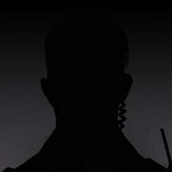
能力者！！その女を放せ、すでに制御を失ってるぞ！まだ止まらないのか？！！
狙撃の弾丸が窓を突き破り、調査員のこめかみに向かって飛ぶ。彼女は本能的に身をかわし、敵を縛る力が一瞬緩む。
ハ…ハハハハ…すごい力だね。もう怪物扱いだよ。この姿で、FACはまだお前を必要としてる？殺されるんじゃない？ハハハ――
私の仇はもう報いたよ。誰かが私のために恨みを晴らしてくれて、心の空虚も怒りも癒された。今は新しい家族がいて、新しい人生があって、私は救われたんだ。
本気でお前を家に連れて帰りたかった。でも、何かを失う者が全部家族になれるわけじゃないみたいだ…お前のおかげで、今ある大切な宝物をますます愛おしく感じるよ…
もう二度と、誰にも私のものを傷つけさせない。あなたも、あなたが私たちを利用して媚を売ろうとしているあいつも、一人たりとも見逃さない。
かつての私は復讐のためにすべてを捧げた。今は未来を守るため、その倍の力を尽くす。すべてを失ったお前が、どうやって私に勝てるっていうんだ？家を失った野良犬が、目も見えずに吠える以外に何ができる？
調査員は咆哮し、目に見えない狂気の渦を突き破って敵を見つけようとする。だが、さらに多くの弾丸がこの壊れた家に撃ち込まれ、体内で狂厄が荒れ狂う。
セヴェロはすでに連れ去られ、調査員の耳元にはその女の華奢な声だけがまとわりつく。
その執着を抱えたまま、過去に溺れなさい。
N.F.113年7月23日 23:04
X宅の地下室
概要：セヴェロが「GARDEN」への忠誠は揺るぎない。数時間にわたる審問は進展せず、代理人はセヴェロの罵倒以外何も得られなかった。
そこへXが「生きているセヴェロの方が価値がある」と提案――セヴェロを人質として連れ去れ、
レオポルドから福音地の重要情報を引き出すという計画を立てた。代理人はその提案を認める。
しかし、「レオポルド」の名を耳にした瞬間、セヴェロは福音地から与えられた単瞳のルーンを起動。
ルーンの力が暴走し、彼女は一瞬で制御を失い、監禁を突破して屋敷から逃走し、大混乱を引き起った。
寝室で、Xは目を開け、ゆっくりと起き上がる。包帯はすべて解かれ、ベッドに乱雑に散らばっているが、
傷はすべて消えていた。肉体の修復には膨大なエネルギーを消費し、Xは疲労の意を感じた。
フレンチドアの外では、藍雨がエリカ山荘を覆い、しとしとと降り続けている。彼女が待つ相手はまだ現れない。
ああ――！！
メイドがXの着替えを手伝うために部屋に入ったが、ドアを閉める勇気はなかった。
階下からは悲鳴、罵倒、狂笑が断続的に響き、上庭の「代理」がいかに哀れな殺し屋を審問しているかを気づかせる。
「代理」が入ってきてから、すべてが変わった。女仆は震えが止まらない。
Xは部屋を出て階下へ向かい、警備されている地下室に入る。
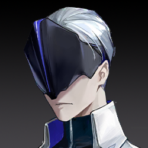
準備ができたら出発だ。車は外に用意してある。ここからの仕事は私が引き継ぐ。
彼女は倒れているセヴェロをちらっと見た。
この殺し屋はすでに瀕死で、しかしその目は不屈と執念に満ちている。少し考えた後、Xが口を開く。
こんなに追い詰める必要はない。情報は誰かが持ってくるさ。
別の情報源があるなら、この殺し屋にはなおさら生きる価値がない。ここで処分しよう。
この殺し屋の背後にいる者――雇い主ではなく、首領だ――そいつはメンバーの命を重んじるかもしれない。彼女は貴重な餌になる。
拷問で情報が得られなくても、殺し屋の首領は彼女のために姿を現し、上庭が必要とする情報を交換してくれるかもしれない。
セヴェロを生かしておく理由としてはこれで十分でしょう。
何かの言葉が彼女を刺激したのか、セヴェロが目を開けて、苦痛と憎悪に満ちた目で彼女を見下ろす二人を睨みつけた。
セヴェロの手のひらには単瞳のルーンが握られ、彼女は強大な力を得るが、同時に狂厄に完全に支配される。汚れた棘が彼女の全身から突き出した。
…それが福音地からもらった最後の手段か。共倒れすると煽られたか…
本当に執拗だ。だからきみは徹底的に利用されたんだ。
巨大な響きが屋外の守備員を引きつけ、彼らが安全責任者に屋内確認の必要性を尋ねようとした瞬間、門が破られ、一つの人影が飛び出した。濃厚な血の匂いと不吉な気配をまとい、その人は警衛が反応する前に豪雨に突入し、夜の闇の中で消えた。その速度は常人のものではない。
その場にいた全員が呆然とし、振り返ると上庭の「代理」が洋館から出てくる。軽傷を負っているが、その感情はますます冷静だものだ。
A級警告、福音地の術式が確認された。ここにいるすべての作戦要員は命令を受け。
この能力者を包囲しろ、殺さず生け捕りにしろ！
目標能力者は山荘の北東方向へ移動中、そこに彼女の仲間がいる。山荘内の全治安官、全力で彼女を阻止しろ。
で、でも…俺たちの仕事は洋館の安全を守ること、彼女を守ることだ。軍はまだいるだろ？遠くに行ってない、すぐそこにいるんだ、なんで彼らを呼ばない！
彼らには別の任務がある。お前たちの仕事はこの山荘内にいる弱った能力者を捕まえることだ。逃がすな、死なせるな。
彼は言葉を失い、花道の向こうから暴走する怪物が自分に向かって突進してくる。咆哮する烈風のような巨大な恐怖が、治安官の理性を一瞬で引き裂いた。
N.F.113年8月8日 9:00
FAC記念墓地
西区戦没者追悼式

今日、私たちはここに集まり、1423人の戦士、友人、そして同胞を迎えます。
3月の災変で、彼らはためらうことなく西区へ向かい、突発的な狂厄危機に対抗し、命を捧げました。
今、災害の影響は抑えられ、反撃の号角がまもなく鳴り響こうとしています。FACはようやく彼らを愛する人々の元へ送り返すことができます。
ここに来て、英雄たちを最後の旅路に見送ってくれて、再び感謝を申し上げます。
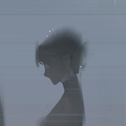
子、一人で来たの？ご家族は?あっ…ごめんなさい、わたしったら…
ありがとう…他の人の代わりに来ただけだから、大丈夫だよ。

追悼？ふん、君が行けばいいじゃない。君だって「娘」なんでしょ？養子でも、彼らは君を可愛がってた。
私は行かないよ。
この時代は傷だらけで、長い夜はまだ明けない。でも、信じる者がいて、立ち上がる者がいる。愛する城邦のために戦い、信じた未来のために犠牲になった。
彼らは闇の中で光を守る英雄、絶望の中で生を取り戻した戦士だ。私たちは決して忘れない。
そして、英雄たちが帰るのは、君たちのためだ。
…なに？慰めに来たの？それとも、私に慰めてほしいの？
私の両親が死んだから、ようやく私と同じになった、共感できるって思ったわけ？
この陵園は君たちのため、そして彼らのために建てられた。彼らは君たちが来ることを望んでいる。愛する人たちが無事でいるのを見たいからだ。
どうか、たびたび彼らに会いに来てくれ。君たちが無事でいること、それがFACの戦いの最大の意味だ。

出てけ！私は君と違う！FACのその綺麗事、受け入れない！こんな英雄、認めない！
死んだらそれで終わりだよ！彼らは私を置いていった、私を孤児にした！そんな奴らが何の英雄だ！
うっ…くそくらえの光明と正義…こんなもののために死にに行くなんて…バカすぎる、みんなくそくらえだ…
…来てくれてありがとう。
我々の城邦が苦難から遠ざかり、同胞が永遠に平安でありますように。
藍雨がしとしとと降り続く中、FACの追悼式はいつもこの絶妙な雰囲気に包まれる。BR-002が全城に拡散した汚染を浄化するため、そして逝去した英雄たちを悼むためだ。
探偵は陵園を出て、誰もいない場所へ歩き、傘を収め、空を見上げた。
藍雨が彼女の顔に当たり、流れとなって頬を伝い、涙と混ざり合い、狂厄の反応を刻む跡を残す。この痛みが自分を覚醒させてくれることを、彼女はどれほど願ったか。
突然、電話の着信音が鳴る。彼女はぼんやりと携帯を取り出し、聞き慣れたメロディを認識すると、灰色の瞳が一瞬で輝きを放ち、探偵は飛び上がった。
セリーヌ姉さん！帰ってきたの？うわ…そんな大変だったんだ…もう…え？！地下の連中がまた何か企んでる？「GARDEN」の殺し屋が連続襲撃？なんて卑劣な奴ら、正面で勝てないからって裏で汚い手を使うなんて！
うんうんうん、もちろんだよ！セリーヌ姉さんの依頼なら絶対頑張ってやるよ！名探偵の未来をかけて、今すぐ出発する！
電話を切り、彼女は走り出した。数歩走っただけで、3メートルも跳び上がる勢いだ。
N.F.113年8月8日、FAC総司令は西区戦線から新城に戻り、市議会に正式に「BR-002黒環封鎖作戦」の認可申請を提出。目的はBR-002周辺に反狂厄遮断網を構築し、黒環汚染の拡散を制限し、西区の環境を完全に安定させること。
FACの設立目的はDis城邦の守護であり、西区はDisの一部、西区の民は守られるべきDisの市民である。
この作戦はすでに上庭の支持を暫定的に得ており、資金、人力、組織権限などの具体的事項は、涅槃グループを含む多数の代表者による共同評価を経て、8月15日に最終審査が完了する予定である。
N.F.113年8月8日 16:00
新城中央公園 落花庭園
「沈水の花」事件現場
新城において、複数の要人が匿名脅迫状を受け取り、襲撃事件が相次いで発生している。西区の情勢がようやく安定したこのタイミングでの事件は、意図的なものを感じさせる。現時点で死者は出ていないが、内部情報によると、この一連の事件は3週間前の連続暗殺事件と密接に関連している。黒幕を早急に捕まえなければ、被害がさらにエスカレートし、社会的影響が悪化する恐れがある。
今は敏感な時期だ。こんな現場が記者に撮影されて報道されたら、世論が大騒ぎになるだけでなく、民衆の間にパニックが広がるだろう。それに……
これまでの襲撃事件とは異なり、現場は入念に演出されている。意図は隠すことなく明らかだ——これは密かな暗殺ではなく、公開された儀式だ。
ふん、気取った犯人め、なかなか興味をそそるじゃないか。セリーヌ姉さんが提供してくれた内部情報によると、この一連の事件は能力者の仕業で、現場には狂厄の汚染が残っている可能性が高い。
彼女は意味ありげに手袋を引っ張った。水面には暗紅色の花が集まり、まるで誰かが被害者の上に丁寧に花を敷き詰めて現場を飾り立てたかのようだった。
探偵は力強く周囲の空気を吸い込み、頭が少しクラクラした。花の形から見ると、ごく普通のバラだが、理論上、バラにはこんな甘ったるくむせ返るような香りはありえない。
彼女は小川のほとりに立ち、身体を前に伸ばしてさらに詳しい手がかりを探した。
よく見ると、周囲の白いデイジーとは異なり、これらの赤い花は被害者の身体から突如として生えたものだった。花と皮膚のつなぎ目には根茎がなく、代わりに淡い赤色の微光がぼんやりと見える。
伝統的な探偵は超能力事件をどうやって解決したんだっけ？
彼女はこれまで目にした報告書を思い出し、頭の中で整理を始めた。
まず情報だ。能力者の能力は恐ろしいものではない、必ず法則がある。現在わかっている情報は、この能力が被害者の身体に花を咲かせるというものだ。
調査すべきは、この花の特異性、人の身体への影響、そしてそれが死に至るかどうかだ。
そばで現場を守っていた治安官が近づいてきて、手を振って彼女を呼んだ。
証物袋には淡い赤色のバラが入っており、近くで見ると普通の花とは明らかに異なる点がわかる。花弁は半透明で、水中の花よりも色がかなり薄い。さらに驚くべきことに、それは証物袋の中で、まるで生きているかのようにゆっくりと呼吸していた。
新城治安局 調査報告
上級指令により、現在の調査報告を以下に共有する：
「沈没の花」事件現場において、人体から検出された花状物質について、物証分析課の迅速検査により以下の特徴が確認された：
1. この物質は暫定的に「狂厄の花」と呼ばれ、特殊な能力者の能力による産物である。構造は結晶に似ているが、柔軟性が高く、壊れにくい。
2. この物質からは破壊されていない人間のDNAが抽出可能だが、細胞や毛髪などの他の生物組織は検出されなかった。
情報を確認した探偵は、頭の中でいくつかの推論が浮かんだ。
Ⅰ．勤務証：最初の被害者の勤務証。身元情報の文字は水で濡れて判読不能だが、左上隅のロゴと下部の文字から「未来メディア」という会社に所属していたと推測される。
Ⅱ．事件写真：犯人が被害者のカメラを使って撮影した写真。まるでこの珍しい場面を記録しようとしたかのようだ。写真ファイルに記録された撮影時間から、犯人はついさっき立ち去ったばかりで、今も現場周辺に潜んでいる可能性がある。
Ⅲ．外部メモリーカード：被害者のカメラから抜き取られた外部メモリーカード。カメラに挿入すればまだ使えるかもしれない。だが、探偵の直感では、犯人がこんな明白な手がかりを残すはずがない。中の情報はすでに消去されている可能性が高い。
Ⅳ．紫蘭のネックレス：精緻で優雅な紫蘭のネックレス。素材は高品質の紫色サファイアのようだ。探偵の知る限り、この大きさのサファイアの供給元は一社しかない。調査するなら、この線から追うべきかもしれない。
Ⅴ．狂厄の花 - バラ：最初の被害者から咲いた狂厄の花。身体から取り外した後、色が大きく薄れ、まるで生命力が失われたかのようだ。治安局の分析報告によると、この狂厄の花には被害者のDNA情報が含まれている。
探偵は被害者のそばに落ちている通信端末に気づいた。
それは被害者の携帯電話のようで、地面に無造作に投げ捨てられていた。指紋認証でロックされており、パスワードや追加の鍵は設定されていないことを確認した。
残念ながら、被害者の身体は水に浸かっており、指紋は変形してしまった。彼女の便利な小道具を使うこともできない。
探偵は周辺の環境調査を終え、視線を再び現場の中心に戻した。
被害者の皮膚は生者とほとんど変わらない。報告書に「被害者はすでに呼吸をしていない」と書かれていなければ、探偵は彼女がただ眠っているだけだと思うかもしれない。かつて先生が話したあの事例のようだ。
皮膚、そうだ！被害者は昨夜発見されたのに、皮膚はまったく水にふやけていない。これは通常の死亡状態ではない！
彼女の身体には巨人観の特徴も現れていない。夏場に水に浸かれば、一晩で変化が起こるはずなのに、彼女にはそれがない。
探偵は自分の探偵バッグからオレンジ色の小さな立方体を取り出し、急いで被害者のそばに駆け寄った。
彼女の指紋を使って端末を開き、手がかりを探せば、早く犯人を捕まえられるかもしれない。彼女を救える可能性だってある！
解鎖に成功し、探偵は急いで携帯の情報を確認した。上流社会の雑多な情報の中に、注目すべきメッセージを見つけた。
Tel: 043176889
やあ、アナタニア、覚えてる？ふふ、絶対覚えてるよね、俺の番号変わってないんだから。俺も同じさ。最近ちょっと金欠で、最初に思いついたのがお前だった。10年前のことはまだ覚えてるよ。そう、あの小さな池のそばでのこと。俺たちの小さな秘密だろ？お前、俺がそれをなくしちゃったら嫌だよな？明日の夜11時に中央公園で会おう。来なかったら……何か別のものが、お前を訪ねてくるぜ。
N.F.113年8月6日 23:12
これだ！被害者はこのメッセージのせいで急いでここに来て、悲劇に遭ったんだ。これは犯人が送ったメッセージだ！
ふん、電話番号をそのまま残すなんて、なんて傲慢な奴だ。命を踏みにじって、得意げに俺たちに挑戦してくる。見てろよ、すぐにお前の正体を暴いてやる！
システムにログイン、番号の所有者を申請……それと被害者の情報、被害者の名前は……アナタニア……
探偵は治安局の内部ネットワークに没頭し、返答を待っていた。自分の背後に大きな影が落ちていることにはまったく気づいていなかった。
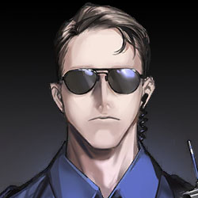
……どこから来た小娘だ？何者だ？なんで現場に勝手に入ってる？
ん？ネクタイはきちんと結んでるけど、靴と靴下がめちゃくちゃ。きっと奥さんが上半身を丁寧に整えてくれたけど、靴は急いで適当に履いて飛び出してきたんだな。最近、局内で結婚の喜びを自慢しまくってるやつは一人しかいない……
あなたがこの事件の責任者、ドイル警部ですよね！私は未来の名探偵、特別に——
私は探偵、城邦治安学校の1年生です。新城治安分局で夏休みのインターンとして働いていて、調査の補助のために派遣されました。現場責任者にすぐ報告しなくてすみませんでした。
1年生の新米インターンを現場に送り込むなんてありえない。証拠を壊されたらどうするんだ？さっさと帰れ——
その時、彼女のポケットが振動し、通信端末にメッセージが届いた。探偵が取り出して見ると、さらに興奮した。
見ててください、最初の容疑者を見つけました！この怪しい電話番号の持ち主はネイサン、男、48歳、記録では新城出身だけど、過去の経歴がめっちゃ怪しいです。追跡調査の許可をください！
少女の熱い発言は冷ややかな沈黙を返された。最終的に警部はため息をついた。
追い払っても無駄なうるさいやつだな。横で観察して学んでろ、調査には手を出すな。さあ、被害者の携帯をよこせ。
彼女は渋々携帯を渡し、その動きはまるで100キロのダンベルを持っているかのように遅かった。明らかに名残惜しそうだった。だがその瞬間——
被害者の電話が突然鳴り、着信表示は【043176889】だった。
探偵は頷き、スピーカーボタンを押した。電話の向こうから奇妙な男の声が聞こえてきた。
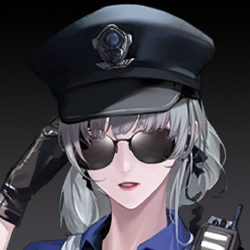
やあ、新米探偵さん。探偵ゲーム、楽しんでる？
そう言うなよ。アナタニアはまだ生きてる。花が彼女の命で、燦然と咲いてるんだ。
動くなよ、もしその花をうっかり踏み潰したら、殺人犯はお前になっちまうぜ。
探偵は慌てて足元を見ると、確かに緊張で飛び跳ねている間に、うっかり水たまりに踏み込みそうになっていた。
俺のことが見えてる！犯人は近くにいる！俺が見える場所で、電話してるやつ——
警部は封鎖線で警戒中の治安官に向かって一発撃った。弾は正確に狙ったが、相手は手を振って弾を弾き飛ばした。
「治安官」は帽子を押さえ、密集した人混みへ逃げ込み、行く先々で驚きの声が上がった。
やっぱり能力者だ。全員、俺の指示に従え、すぐに——
任せてください、犯人を必ず捕まえてみせます！真実を明らかに——する！
警部が手を伸ばして探偵を捕まえようとしたが、牛のような力に引っ張られ、つまずいて地面に倒れた。顔を上げると、金髪の少女はまるで脱柵した野馬のように突進していった。
逃走する「治安官」の動きは異常に素早く、追跡の大部隊をたちまち数ブロック引き離し、小さな路地に飛び込んだ。
そこは行き止まりだったが、彼女は脇にあった貨物箱を軽々と利用し、4メートル以上の壁を優雅に登り、得意げに振り返った。唯一彼女を追い詰めたのは、研修中の探偵だった。
警探チームに特別採用された能力者って、お前か……足の速さと持久力は悪くない。ただ、動きがちょっと鈍いね。
彼女は手にした杖を力強く振り下ろし、まるで鉄槌のように壁全体を粉砕した。容疑者の姿は一瞬にして舞い上がる煙塵に飲み込まれた。
一時的な戦闘が終わり、探偵の体には多くの傷が残ったが、相手の髪の毛一本すら触れられなかった。敵の力は予想を遥かに超えていた。
特別派遣の能力者探偵って、どれほどのものかと思ったけど、ガッカリだよ、小娘。
口では強がりながら、探偵は密かに容疑者の手にある武器を観察する。
それは虚空から引き出された深紅の結晶短刃で、奇妙な花が数輪咲いている——被害者アナニアの体に咲いた狂厄の花と全く同じだった。
やっぱりお前がやったな。運がいいぜ、一発で真犯人に当たった。
現場を派手に飾り立てて、狂厄の能力をこれ見よがしに披露するのは、俺たちに挑戦状を叩きつけるつもりか？それとも観客に褒められたいだけか？
派手好きで自己陶酔のやつ、天下の誰もがお前の操り人形になると思ってるんだろ。電話で俺たちを馬鹿にしながら、近くで自分の「芸術」を鑑賞して……残念だったな、俺に当たっちまった！
へえ、警学校の1年目で心理プロファイリングを教わった？その答え、まあまあだね。
でもね、おバカさん。解答速度が遅すぎるよ。最初の連絡からヒントはたっぷり与えてたのに。
あの先輩刑事は一耳で現場が監視されてるって気づいて、視線を抑えつつ慎重に不審者を探して、蛇を驚かせなかった。なのに、お前は47秒も遅れて、そこで大声で喚いてるだけ。
うっ……お前に説教される筋合いはない！俺と一緒に戻れ、事件を全部白状しろ。なんでこんなことした？どうやってやった？仲間はいるのか？
お前、アナニアはまだ死んでないって言ったな。彼女の命を花に変えた。なら、彼女をまだ救えるのか？
能力を解除しろ！今なら故意傷害罪で、数年牢屋に入るだけで済む。命を踏みにじる罪は絶対に許されない！お前——
いや……なんでもない、面白いことを思いついただけ。こんな風なやつ、久しぶりに見たよ……
探偵は一瞬も目を逸らさなかったが、容疑者は彼女の眼前から突然消えた。次の瞬間、声が背後から響く。
探偵は抵抗する暇もなく、背後から首に回された手に捕らえられた。指先が顎に触れ、喉の曲線をなぞりながら下へ滑る。突然、探偵は全身に痺れる感覚を覚え、何かが体内から引き抜かれるのを感じた。
私に大口叩くなんて、さすがに私とお前が同じド素人だと思ってるわけじゃないよね。
……「殺人犯」なんて言葉じゃ私を定義できないよ。私たちの見る「命」も「正義」も違うんだ。
彼女の手はさらに外へ伸び、探偵の胸から深紅の花芽を引き出した。それはゆっくりと伸び、開いていく。
ほら、人は花を咲かせる。これはお前の花だ。大事に守れよ。傷つければ、それはお前の命を傷つけることになる。
命を大切に思うことには賛成よ。どんな醜く卑劣な人間でも、美しい花を咲かせられる。
肉体も魂も養分となって、花を育て、開花するまで。それこそが本当の純粋な命だ。
深紅の花苞が引き出され、ゆっくりと開く。探偵の体内では吐き気を催す衝動が湧き上がり、まるで血液が血管の末端から吸い出されるようだった。彼女は歯を食いしばり、なんとか声を絞り出す。
続けるよ。もっともっとたくさんの花を咲かせる。まるで水の中のあの女のようになるまで、彼女が耐えうる全ての花を開かせる。
命って偉大だよね。強い人ほどそう。私は誰かがまるごと庭園を咲かせたのを見たことがあるよ。
私が聞いてるのは……「開花」された人は、命を吸われた後、どうなるんだ？
探偵の怒りが爆発し、憎悪が恐怖を追い払い、彼女は一気に身体の主導権を取り戻した。脅威を顧みず振り向き、渾身の力で杖を振り抜くが、女に避けられ、すぐに杖を敵の退いた方向へ投げつけた。
それは他人の命だ！お前になんの権利があってねじ曲げ、踏みにじるんだ？！
投げつけられた杖が壁を砕き、一瞬にして路地全体が煙塵に包まれる。破れた治安官の帽子が哀れに舞い落ち、煙塵の中にかすかにその女の姿が浮かぶ。
彼女は長い髪をなびかせ、深紅の小さな花を手に弄び、楽しげな様子だ。
怒った？ハハハ、ちょっと面白いね。これ、キミが喚くつまんない「正義」よりずっとキレイじゃない？
杖はまだ敵の背後の壁に突き刺さっている。あの一撃で探偵の力は尽き、あるいは——「花」を摘まれたことで本当に一部の生命力を失ったのか。彼女は今、動くのも困難で、歯を食いしばるほど悔しがる。
7月、エリカ荘園、殉職した治安官たちは能力者に命を吸い取られたんだ。現場に残されたのは深紅の刺だ。
お前がエリカ荘園を襲い、セリーヌ姉さんを襲ったやつだ！お前が「Garden」の能力者のリーダー、暗殺者の「業師」だ！
セリンか……姉さんって呼ぶんだ、キミ、彼女のこと大好きだろ？ふふ……なら、ちょうどいい。この姉さんとも遊んでよ。
白い刃が探偵の左足に突き刺さり、彼女は痛みに耐えかねて膝をつく。完全に動けなくなった。
抜いてみると、その白刃はただの便箋だった。広げると、中には数行の文字。
庭院深く、春花は碧水に沈み、声は寄せる。
梅雨の夜、流蛍は断壁に舞い、残垣の影。
秋の膏盛ん、酒肉は金銀に誤り、欢宴始まる。
歳暮至り、茫茫と枯井を覆い、独り行く。
春花、碧水に沈む……これはまさか……暗殺予告？事件はこれだけじゃない、お前、まさかまだ——！！
ふふ、これが始まりだよ。盛大な花の開花を約束したんだから、ちゃんと守るよ。
次の花は、いつ、どこで、なぜ咲くのか……推理してみなよ？未来の名探偵さん、キミの大好きな推理ゲームだと思ってさ。
私の謎を解けたら、依頼を一つ聞いてあげる。誰を殺すか、誰を救うか、誰を許すか……でも、もし解けなかったら……
キミも、セリーヌも、キミの愛する人たち、たくさんの人が私の「Garden」を飾る花になる。
さあ…、早く動きなよ。こんなとこで私と意地張ってる暇があったら、2番目の花はもう咲いてるかもしれないよ。
女はポケットから豪華な携帯を取り出し、2回振って探偵の顔に投げつける。探偵は慌てて受け取る。携帯の画面は割れていて、直感でそれがネイサンのものだと分かった。
自分で推理しなよ。できれば大勢連れてきな。口だけの正義じゃ私を止められないよ。ついでに、返してあげる、刑事ちゃん。これはキミの花。
彼女は軽く手を離し、探偵から引き抜いた花が地面に落ちる。それは幼い、ヒマワリかデイジーのような花。探偵には見分けがつかない。
キンセンカは陽気な命じゃないから、キミも無理に正義の使者なんて演じなくていいよ。ありのままの自分で私に挑みな。それなら、ちょっと期待できるかな。
これは10年かけて醸成された花期だよ。難易度下げてあげたんだから、勝ちなよ。
10年……どういう意味だ……103年に何があった？
相手は答えず、大笑いしながら振り返って去っていく。
探偵は追いかけたかったが、花を咲かせた身体は傷つき、言うことを聞かない。彼女は去る背中に向かって怒鳴るしかなかった。
逃げるな！！このクソくらえ、さっきのはどういう意味だ！？

現場にあった「そこにあるはずのない花」数輪について、その理由がわかりました。デイジー、春に咲く花ですが、セントラルパークにはそんな花はありません。情報課は新都市全体を調べ尽くし、興味深いものを発見しました。
104年の春、ここで一人の女性が溺死しました。調査の結果、他殺は除外されましたが、当時の現場写真が非常に興味深いものでした。
ポーズ、配置、現場のデイジー……すべてがアナタニア事件と驚くほど似ています。この二人にはどんな繋がりがあるんですか？
まだ確実な証拠はありませんが、彼女たちが一つの出来事に関係していることは確かです。
103年のFACのあの有名な大敗です。
亡魂の名はオフィーリア。元FAC通信部門所属で、103年のある重大な作戦の支援に参加していました。
現在、詳細を調べるための十分な権限は得ていませんが、その作戦は大失敗に終わり、死傷者が多数出ました。当時、これが連鎖反応を引き起こし、FACの当時の総帥を含む数人の責任者が引責辞任し、元総帥も間もなく病死しました。
オフィーリアは地位は高くありませんでしたが、104年初頭に心身の不調を理由にFACを退職しました。そして3ヶ月後、池で溺死しているのが発見されました。
アナタニアについてですが、彼女はFACのメンバーではありませんでした。しかし、103年のFACの内部世論危機を処理する役割を担い、103年の敗戦の責任は内部の情報や通信担当者にあるとする記事をいくつか発表しました。その中にはオフィーリアも含まれていました。
これが当時、大きな波紋を呼びました……
この事件、思ったより複雑だな。103年やFACとの関連がどれほど深いのかはわからないが、ともかく、君はこの事件から手を引くべきだ。
君の状況はわかってる。君の父親はFACで、103年に殉職した。君は殺人事件に携わった経験がなく、精神的に不安定な過去もある。
その背後にある繋がりは深く詮索しないし、誰が君をこの任務に任命したのかも問わない。でも今、「Garden」が君を狙ってる。そして君の感情的になりやすい性格も見ている。リスクを評価した結果、君はこの事件に適さないと判断した。
……私……大丈夫です。そんなに弱くありません。それに……これはとても大切な人に託された仕事なんです。
どんな大物だろうと関係ない！これはインターンが関わるような案件じゃない。命を落としたら、俺がもっと説明できない。怪我を癒して、俺たちと一緒にここで時間を無駄にするな。
探偵は拳をぎゅっと握り、徹夜のせいで興奮と苛立ちが交錯し、抑えきれない感情が渦巻いていました。
その時、聞き慣れた特別な着信音が響き、探偵は飛び上がるように反応し、目が輝きました。
待って、重要な電話！大事な電話を取るから！すぐ戻る！
彼女は一目散に走り出し、女子トイレに駆け込んでようやく息をつき、唾を飲み込み、不安と興奮を胸に、通話ボタンを押しました。
あ……セリーヌ姉さん、大丈夫？もう戻ってくる？ごめん、私、経験不足でつい熱くなっちゃって、犯人を逃がして、みんなに心配かけちゃった。
私のことより、セリーヌ姉さんの任務のほうが100倍大変で、敵も100倍危険なのに。結局、姉さんが私のことで気を揉むことになっちゃって。
そんな話は自分で彼女に言えよ。セリンが君に連絡しろって言ったのは、情報を提供するためだ。私は「Garden」の数人の暗殺者とやり合ったことがあるが、彼女たちは殺人を楽しむような狂人じゃない。
雇われた依頼以外で、「Garden」の自主的な行動には強い目的があり、感情に突き動かされていることが多い。
君が担当している一連の事件から見ると、「Garden」は元々無関係だったいくつかの事件を結びつけて、儀式的な意味を持たせようとしている。その儀式自体に目的がある。セリンは君にその目的を突き止めてほしいと言ってる。
彼女たちがこんな派手な行動に出るのは珍しい。これはチャンスだ。「Garden」の拠点を追跡するために、すでに人を送り込んでいる。
セリンは、必要ならいつでも君のそばに来ると言ってる。でも、彼女は君ならできると信じてる。
……うん。うん！手がかりをくれてありがとう、セリーヌ姉さんにも感謝！私、アイデアが浮かんだ！
よし！充電完了！みんなの期待を裏切らないため、名探偵は闇を照らす光を放ち続けるよ！
彼女は調査チームには戻らず、直接次の調査現場――ネイサンの家に向かいました。
治安局が調べたネイサンの記録によると、彼は10年前にシンジケートから新都市に密入国し、それ以前の経歴は全くの空白です。
新都市に密入国して間もなく、彼は大規模な建設会社を立ち上げ、多くのプロジェクトを受注しましたが、会社の業績は振るわず、この10年間ずっと赤字でした。
それにもかかわらず、ネイサン個人の口座には多額の不明な資金が流れ込んでおり、資金の動きは巧妙に隠され、隙は見つかりませんでしたが、それ自体がネイサンに問題があることを物語っています。
探偵がネイサンの家に到着すると、彼の記録と同じく、家も「きれいに」整理され、怪しい点はほとんどありませんでした……
ただ、一冊の手書きの電話帳を除いて。そこにはアナタニアの番号があり、対応する名前は暗号のようなコードで書かれていました。
探偵はその電話帳の他の番号を調べ、ほとんどの番号が慈善事業に関わる富豪や、新都市の高官のものであることを突き止めました。
おそらく、アナタニアと同じく、彼らもネイサンが選んだ恐喝の標的だったのかもしれません。
探偵は、アナタニアがネイサンからの「メッセージ」を受け取った後、彼に関する情報をネットで検索していたことを発見しましたが、記録によると、彼女の検索はネイサン個人ではなく、彼の建設会社に集中していました。
彼女の検索履歴を追うと、アナタニアが意図的かつ目的を持って資料を集めていたことがわかりました。
ネイサンの建設会社は、工事の品質に関するトラブルにしばしば巻き込まれていましたが、どのトラブルも最終的には大事にならず、うやむやにされていました。
最近のプロジェクト記録では、錆びた川の東岸にある建築廃墟の解体工事が記載されていましたが、何らかの理由で工事が中断されたままです――ネットの噂では、その場所が「幽霊が出る」とされ、作業員が怖がって行かないと言われています。
探偵が独自に調べたところ、この建築は最初、ネイサンの会社が建設を担当しましたが、途中で突然中止され、廃墟になったことがわかりました。
建設から中止、解体決定から解体中断まで、10年にわたるこのプロジェクトには疑問だらけでした……
彼女は地図を広げ、錆びた川周辺を注意深く調べ、ネイサンが関わった「建設プロジェクト」の場所を特定しました。完成したものもあれば、すでに取り壊されたものもあります。残っているのは、都市伝説のようになかなか壊せない、崩れかけた壁だけ――
隊長！隊長！ネイサンの居場所がわかった！場所は正確じゃないかもしれないから、私、先に現場を確認しに行きます！
彼女はゴミの山から飛び降り、足を捻って転がり落ち、痛みを叫ぶ暇もなく、手足を使って這うように進みました。
犯人は確かに先にネイサンを捕まえたけど、すぐには殺さなかった。ネイサンは花のメッセージの2番目に対応してる。犯人の計画では、彼は2番目に「花を咲かされる」人間のはず。
もし間に合えば！もし救えるなら！間に合えば、彼は死なずに済むかもしれない！
いてくれる方がいい。探偵には師匠に言いたいことが山ほどある。たとえここで会えなくても、必ず追い詰めて、白髪の「能力者」を見つける。
電話を握る手が激しく震え、目の前の光景に衝撃を受け、悔しさ、無力感、そして深い怒りが心を揺さぶりました。
N.F.113年8月9日 17:36
錆びた川東岸
「崩裂の壁」事件現場
花が咲きすぎている……この辺りは危険だ。みんな、必ず防護装備を着けて、できればFACも呼んでください。みなさんが来る前に、私、現場の予備調査を始めます……
電話を切った後、探偵は深く息を吸った。狂厄の花の眩しい輝きが彼女の神経を刺激し、過去の混沌とした記憶を掻き乱す。彼女はあらゆる生理的反応を抑え込むために必死で自分を制御しなければならなかった。ここで倒れるわけにはいかない。
亡魂はもう追えない。彼女は一人の命を救えなかった。今できることは、真実を見つけることだけだ。
夕陽の下、紫赤の花が不思議な光を反射している。この現場には被害者の姿はないはずなのに、探偵の目にははっきりと「人間」が見えた。
探偵は慎重に壁から花びらを一枚取り、証拠袋にそっと入れた。次は、花とほぼ一体化した衣類。
半空に吊るされたこの衣類の束は、手袋越しでも温かさを感じる。
夕陽のせいか、それとも生命の残温か。一人の人間がこの世から完全に消え去り、これが残された痕跡だ。
前の被害者は生とも死ともつかぬ状態だったが、この被害者の肉体は完全に消滅している。これは犯人の意図的な要求なのか、それともその能力に関係するのか？
もしこれが犯人の意図的な演出なら、第一の事件が復讐のためだったように、第二の事件も同じ動機か？第一の被害者よりも、犯人は第二の被害者をより強く憎んでいたのか？
もしこれが犯人の能力の特性によるものなら、この変化は場所、時間、それとも被害者の特異性によるものか？
探偵は目を閉じ、無数の推測が脳内でぶつかり合い、徐々に落ち着いていく――彼女にはもっと手がかりが必要だ。
「ネイサン」の身体が壁に吊るされ、静かに探偵を見つめている。
（以下は証拠品に関する情報：）
Ⅰ．金属義肢：特殊な模様が刻まれた金属義肢。情報検索によると、シンジケートに属する、多年消息不明のギャング組織に由来する。
Ⅱ．蛍光胞子：青雨の作用下で持続的な蛍光効果を発する胞子。まだ完全に開花していない。
分析によると、これらの胞子には人間のDNAが含まれ、容疑者が活性のない遺体に「開花」の能力を使用した結果と推測される。
Ⅲ．遺留衣類：第二の被害者が着ていた衣類。狂厄の花に変化しておらず、有効な生体組織は検出されなかった。
犯人の開花能力は、対象となる生体にのみ作用し、それを完全に狂厄の花に変換できると推測される。
Ⅳ．金属バケツ：奇妙な青い液体が入った金属バケツ。特殊な試剤の可能性があり、由来は不明で、さらなる分析が必要。
Ⅴ．狂厄の花-曼荼羅：第二の被害者から咲いた狂厄の花。壁から取り外した後、色に変化が見られたが、物質構成に変化はなく、含まれるDNAは依然として活性を持っている。
バケツの表面は凹凸があり、どこにでもあるゴミバケツのようだ。だが、中には奇妙な淡い青い液体が詰まっている。
これは誰かが廃棄した廃材なのか、それとも誰かが彼女のために用意した「道具」なのか？
この液体には、なぜか見覚えがあるような感覚があった。
そこには少し緩んだ石塊があり、誰かに叩き割られたようだ。探偵は思い出した。この場所はかつて解体予定だったが、知られざる理由で誰かに中止させられた。
彼女が手を軽く触れると、バラバラと破片が落ちてきた。
思い切って力を込めて掘り出すと、煉瓦の奥に小さな空洞が現れ、奥には白い破片――まるで剥がれ落ちた石片のようだった。
探偵は瓦礫の山にしゃがみ込み、息を整え、知っている手がかりを治安局に送信した。この事件はアナタニアの事件よりもはるかに深刻だ。彼女はもっと支援を受け、現場をより丁寧に調査してほしいと願った。
すぐに返信が来た。ほとんどが昼間に局内でネイサンについてさらに調査した結果だった。
ネイサン、シンジケートの密入国者。新都市で高利貸しなどの違法行為に手を染め、104年に突然足を洗い、建設業を始めた。
足を洗う前、ネイサンはFACの殉職者の遺族を脅していたとされ、誰かを助けてその「騒ぎ屋」を処理した疑いもあったが、証拠がなくすぐに保釈された。
また、彼が錆びた川で死体を始末したとの告発もあったが、当時、錆びた川の隔離帯は簡単には近づけない場所だった。そんなことをすれば、FACの東岸監視拠点に生きたまま飲み込まれていただろう。
ネイサンの帳簿を詳しく調べると、彼が投資したプロジェクトはすべて失敗に終わりながら、個人口座には大量の現金が残っていた。
どうやらこの元シンジケート黒幕は、新都市に来てからも裏の仕事をしていたらしい。復讐されるのも無理はないし……その手口、なんて残酷だ。動機が繋がった。もう一つの共通点は……
偶然だろうか？心臓が激しく鼓動し、彼女は自分を抑え込み、目の前の事件に集中しようとした。
二つの現場は俳句の二句に対応し、手段はどちらも「開花」。被害者はどちらも103年のFAC大敗に関係し、動機は復讐の可能性がある。残りの二句で事件が起きるなら、同じ特徴が現れるはずだ。
この二つの事件の真相を突き止めれば、彼女の行動を予測できるかもしれない。これ以上人を傷つけさせない。どんなに立派な復讐も正義とは呼べない。
立ち上がり、探偵は狂厄の花に覆われた崩れた壁をじっと見つめた。もう少し見れば、新たな手がかりが見つかる気がした。
事件の背後にある真相を突き止め、彼女を止めなければ……
探偵は目を大きく見開き、恐ろしい連想が突然彼女の思考を掴んだ。目の前にはそれほど高くはないが異様に分厚いコンクリートの壁。ネイサンの衣類は狂厄の花に絡まり、宙に浮いている。
地面には瓦礫が積み重なり、後ろには岩のようにゴツゴツした暗色の植物が這う。まるで無造作な偽装か、確固たる暗示のようだ。彼女の脳裏に、アナタニアの池塘が浮かんだ。
オフィーリアと同じく、セントラルパークの池に沈められ、わざわざそこにない花が撒かれた。104年春の現場と一致させるためだ。
探偵は瓦礫を踏み、「ネイサン」を壁から慎重に外した。花以外、ネイサンの肉体はこの世から完全に消え、何も残っていない。
この廃墟の壁には、他にも多くの「植物」が這っている。ネイサンから咲いた狂厄の花ではなく、地衣類や苔のような枯れた存在だ。
だが、探偵にはなぜかそれらが似ていると感じられた。どれも自然の植物ではなく、人間特有の、生と死の匂いを帯びている。
自分の推測を証明する手段が必要だ。そして、ちょうど誰かが彼女に「道具」を用意していた。
意味不明の廃バケツに戻り、探偵は新たに摘んだ曼荼羅を手に取り、液体に浸した。花が水に触れた瞬間、狂厄の花は赤と青が交錯する恐ろしい炎を上げた。
炎はすぐに消えたが、花の強烈な蛍光はしばらく消えなかった。探偵はそれを知っていた。自分が青雨に濡れたときの狂厄反応と同じだ。これは能力者に対する青雨の反応。誰かが彼女のために用意した「青雨」だ。
探偵の心に突然火が灯り、燃え盛る炎が彼女を突き動かし、バケツを手に一歩一歩、壁に向かった。
探偵は全力で瓦礫を片付け、夕陽が沈み、黄昏の影が急速に伸び、彼女を飲み込んだ。
最後の光が消える前、探偵は歯を食いしばり、全力で青雨を土壁にぶちまけた――
何度も何度も、違う方向へ、バケツの水がなくなるまで、すべての青雨を使い果たすまで。土壁に轟く炎が燃え上がり、探偵の驚愕した顔を照らし出す。目を閉じたくても閉じられない。彼女は見続けなければならない。
炎が徐々に消え、濡れた壁にはまだらに赤い蛍光が残る。散らばりながらも、いくつかの目立つ光斑が集まり、コンクリートに埋められた「何か」の位置を示していた。
人は花を咲かせる……肉体も魂も養分となり、花を育て、開花させる。
では、この開花できない「狂厄の植物」は何か？何に養われ、なぜ開花しないのか？
おい？小娘、まだ現場にいるのか？FACが近くで汚染生物の活動を検知した。何かあったのか？
探偵は手にした杖を土壁に叩きつけ、全力で、繰り返し、力強く打ち続けた。彼女の目はますます赤く染まる。
遠くで、汚染物に引き寄せられた何かが頭を出し、徐々に近づいてくる。だが、探偵は気づかない。真相への執着が、彼女に外界の音を聞かせなかった。
壁に亀裂が生じ、崩れ落ち、煙塵とセメントの破片が転がる中、かつて光斑が輝いていた場所から、判別不能な異物が転がり出し、探偵の足元に落ちた。
――それは、どれほど封じ込められていたのか、どれほどの数か、もう花を咲かせられない、枯れ果てた「生命」だった。
ネイサンだ！暗闇の中でも、探偵にはネイサンがしてきたすべてのことがはっきりと見えた。蛍光に照らされ、生命の残骸がすべて露わになった。
手首のSAN値警報器が鋭い音を立て、探偵は頭を抱えて叫びながら地面に膝をつき、過去に埋もれた狂気の記憶に飲み込まれた。
調査員やFACの支援部隊が現場に到着したとき、探偵の姿はすでに消えていた。現場には壊された断壁と、激しい戦闘の痕跡だけが残っていた。
探長は汚染区域に入るのを避け、遠くから眺め、探偵が最後に送った詳細な調査手がかりを確認。コンクリート内に多年封じ込められた複数の残骸を確認し、眉をひそめた。
FACは断壁近くで砕けた異方晶を見つけ、死役たちが粉々にされ、探偵のマントも引き裂かれていた。近づかずとも、つい先ほどここで激烈な戦闘があったことがわかる。
あのインターンの戦いは壮絶だった。彼女はおそらく制御を失った。
あいつ、心理的トラウマを抱えてる。もし彼女がこの壁を壊して、中のものを見たら……
心理的トラウマ？なんで早く言わなかった？！なのに、なんでうちのチームに配属したんだ？？

……この任務は上からの推薦だった。こんな大事になるとは誰も思わなかった。どうか彼女を気にかけてやってください。
あの子の父親はFACの教官だった。彼女の家族と親しかった戦士、チーム全員が一つの秘密作戦で死にました。そう、103年……
あの数年、FACに関する噂や悪評が多すぎた。巻き込まれた人々は悪い方向に考えがちだった。彼女の母親もその後、過労で病死した。クリスは大きな打撃を受け、いろいろ問題を起こした。
いい家に引き取られ、彼女自身も立ち直ろうと努力し、頑張って治安警学校にも合格した。だけど、万が一ってこともある。
彼女の養父母もFACの戦闘員だったけど、つい最近、西区の作戦で殉職した。あの子、いつも強がってるけど、どこまで耐えられるか……
ちっ、また103年か。もっと早く彼女を追い出すべきだった。一人で来させるべきじゃなかった！
目覚めたとき、辺りは真っ暗だった。この静寂の闇が、ようやく彼女を狂乱と暴力の悪夢から解放した。
さっきの叫び声、めっちゃ悲惨だったね。悪夢でも見た？安心しなよ、君の体にあった汚染は、慈悲深い私が全部抜いてあげたから。
探偵は体を起こそうとしたが、失敗した。口の中に溜まった血が呼吸を妨げ、辺りは真っ暗――あるいは、まだ視力が戻っていないだけかもしれない。
彼女の視界には、手元に散らばる黒い金盞花の破片――いや、金盞花の形をした狂厄の汚染が見えた。それが彼女に悪夢の戦いを思い出させた。崩れた壁の下で、彼女は多くの死役と戦い、汚染された。
だが今、体の陣痛のような痛みを除けば、あの狂乱の感覚はもうない。誰かが彼女の体の汚染を処理してくれたのか？こんな……花を咲かせるような方法で？
暗闇から聞こえるのは、聞き慣れた声。誰かが彼女をじっと見つめている。
床、硬いよね。ごめんね、怪我人に膝枕でも貸してあげたいところだけど、君、傷だらけでさ。寄りかかったら私の服が汚れちゃうから。ちょっと我慢してね。
自分の体から漂う腐臭と血の匂いとは違い、辺りには花の香りが漂い、さらさらと水の流れる音が聞こえる。
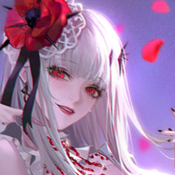
私の「Garden」だよ。敵の大本営に着いちゃったね、小さな探偵さん。
ぷっ、こんな可愛い童顔なんだから、もっと愛らしいこと言ったら？
探偵にそんな気分はなかった。意識は体と同じく重く、ただ一番大事なものをつかみたかった。
君の事件……全部10年前の復讐だ。同態復仇……でも、それだけじゃないよね……
事件を通じて、私に何かを調べさせたいんだ。10年前の何かを暴きたいんだ……
だったら、直接調べさせてよ！なんでこんなやり方なの！あと二句の詩、あと二人の命、ここで終わりにして。私、君が望むものを調べるから、もう――
「Garden」は人生を楽しむ場所なんだから、仕事のつまんない話はなしにしてよ。
じゃあ、なんで私をここに連れてきた？殺す気？それとも拷問？
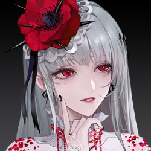
うーん、考えてみる……あ、そうだ。誰かが君を「Garden」に誘おうって言ってたっけ。
ふふ、可愛い反応。君もFACの可哀想な子なんだから、ここの仲間と挨拶でもしたら？
何年も経って、FACで死んだ人なんて山ほどいる。君と同じ境遇の子供が「Garden」に加わるなんて、普通でしょ？彼女たち、君のこと結構気に入ってるよ。
……復讐のために「Garden」に加わる。探偵はその気持ちをすぐに理解した。彼女は拳をぎゅっと握った。
違う……どんな不当な扱いを受けたって、私は他人を傷つけない。正義を信じてる……
何が違うのさ。8年前、君だって一人で涅槃グループに乗り込んで、上庭の代表を刺したじゃない？
探偵の呼吸が止まった。その反応に業師はとても満足そうだった。業師は水の中から立ち上がり、全身に水滴をまとった。周囲の暗殺者たちが群がり、薄いベールを彼女にかけ、浴槽から出るのを手伝い、彼女は終始楽しそうに笑っていた。
だから、君って変わってるって言ったの。正義だの真実だのって馬鹿みたいなこと言ってるけど、咲かせた花は暗くて哀れっぽい。私の「Garden」に連れてこられても驚きも騒ぎもしない……やっぱり、慣れてるんだね。君の心はずっと真っ暗なところに閉じ込められてる。
業師は探偵のそばに歩み寄り、身を屈めて獲物を吟味するように眺めた。長い白髪が探偵の顔を撫で、水滴は冷たかった。動きたくても動けない探偵は、相手の鮮やかな赤い目を見つめるしかなかった。
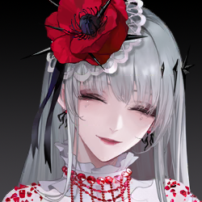
あの時、何があったの？小さい子がそんな大それたことやっちゃうなんて、どれだけ怒ってたの？
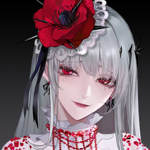
刺殺、成功した？憎しみをぶつけた相手、仕留めた？
探偵は彼女の視線を避け、歯を食いしばり、苦しげに言葉を絞り出した。
……そんなんじゃない。君には関係ない。話すつもりもない。
じゃあ、刺殺失敗したんだ。残念だね、君、めっちゃ才能あるのに。能力者として覚醒までしてる。
暗殺者として、復讐者として、怒りに燃えてすべてを焼き尽くす者として。君には暴力と破壊の才能がある。ここにいる子たちと同じだ。だからあの女が君をそばに置いてるのよ。
正義なんてやめなよ。それは君のセリーヌ姉さんがでっち上げた嘘、君を縛る鎖にすぎない。君が扱ってる事件がその証拠でしょ？
アナタニアって女、浅はかで虚栄心の塊。道徳の高いところに立って他人を口汚く罵り、人を傷つけたらビビって魂が抜けたみたいになって、数日後にはまた自己弁護して高みに戻る。
ネイサンだって、汚い手口のシンジケートの野犬。頭の腐った議員に取り入って、どれだけの人命を背負ってるんだ。10年経っても、私が裁かなかったら、誰が裁くの？君の正義はどこにあるの？
弱った探偵はしばらく黙り、業師の目を見つめ直した。
……そういうこと言うの、君で何人目だ。「世の中が暗いから、正義なんて存在しない。だからちょっとルールを破ってもいいよね」って。
世界がひどいから、君の悪は許されるって？ふざけるな！自分がやった悪を軽々しく流すなよ。君だってあいつらと同類、汚い仲間だ！君も悪の一部だ！
この城邦で、どれだけの市民が君たちを恐れてるか、どれだけの極悪人が君たちを真似して無垢な人を傷つけてるか、自分でわかってないの？
業師は笑うでもなく笑みを浮かべ、突然大げさにため息をつき、首を振った。
はぁ……聞いた、蓟？これが君が必死で助けた「同類」だよ。
灯りがつき、屏風の向こうに傷ついた暗殺者が現れた。探偵と同年代くらいで、全身傷だらけ。顔は青ざめたり白くなったり、探偵と似た汚れが体についている。
業師はもう探偵の質問には答えず、蓟の方を向き、嘲るような顔をした。
死役の山からこいつをせっかく引っ張り出したのに、同じ境遇なら分かり合えると思ったんだろ？でも、相手には君がただのクズに見える。せっかくの好意が無駄だったね。
もしこいつが君の情にほだされて、涙を流して優しい言葉をかけてきたら、君、泣きながら「Garden」の全部を差し出しちゃうつもり？
蓟は業師を見られず、ただ探偵を恨めしそうに睨み、怒りと羞恥、後悔が目に溢れていた。

情けない！何度も言ったよね、他人をそんな大事にしないって。今さら泣きわめいて何？「あ、大丈夫、許すよ」って私が言えば、気が楽になる？
勝手な行動で私のルールを破り、敵を本拠地に連れ込み、君の気持ちまで私がケアしろって？私が君のママなの？
ムカつく！せっかくの休息時間、君とその汚い拾い物に台無しにされた。禁閉行き！私が機嫌直すまで出てくんな。
探偵は叫んだが、それは業師に向けたものではなく、泣き出しそうな「Garden」の暗殺者に向けたものだった。
彼女は足を止め、振り返って睨んだ。探偵は一瞬、何を言うべきか迷った。
君が私を助けてくれた？ありがとう？君の家族もFAC？ごめん、そういうつもりじゃなかった？こんな女のそばにいるべきじゃない？一緒にここから出よう？
蓟は去った。探偵は地面に倒れ、業師は横で面白そうに見つめていた。
ほら、彼女もFACの遺族だよ。103年で全てを失った。でも、君みたいな後ろ盾はなかった。正義にすがっても、返ってきたのはビンタの嵐だけ。だから私のところに来た。
最初は福音地、次は君……復讐を口実に、傷ついた人たちを騙して利用してる。一無所有の彼女たちを、傷つける刃に変えたんだ。
彼女の人生が壊れたとしても、人は強い。少しずつ立ち直って、自分を取り戻せたはずだ。でも、君が彼女を闇に引きずり込んだ。今じゃもう戻れない！
その言葉が終わると同時に、業師が探偵の腹を強く蹴り、重傷の探偵は横の柱に叩きつけられた。鋭い何かが体に突き刺さり、意識が混濁する。
何か硬いものが頭に押し付けられ、強く圧迫されるのを感じた。

吠えるな。執行人がくれるのは立派な正義で、私が与えるのは憎しみの洗脳だと？誰を見下してるの？
君がどんな奴か、私にはお見通しだ。この世界に復讐する力がないから、一番空っぽなものを救命胴衣みたいにしがみついてるだけ。
君みたいなのが一番騙されやすい、一番間抜けで弱いんだ。蓟の馬鹿を目覚めさせるためじゃなきゃ、君のことなんか見向きもしないよ。
「Garden」は君みたいな正義の戯言なんか聞かない。誰の言葉も聞かない。愛や崇高を名目に頭を下げさせるもの、全部汚い嘘だ。外のもののために払う犠牲は、全部愚かさの証明だ。
私たちを傷つけた奴は、当然私が自分で裁く。そうやって奪われたものを自分の手で取り返すの。
じゃあ……今やってることは何？この一連の事件、誰に復讐してるの？
私の深い恨みはもう自分で片付けた。私は自由だ。今やってることは、全部私が楽しみたいから。で、私が何をしたいかって？君の主人に伝えなよ。彼女に私と遊んでもらおうじゃない。これもきっと、彼女が君を送り込んだ目的でしょ。
だって……まさか本当に君に事件を解決できるなんて思ってる人、いるわけないよね。
突然、数本の細い針が飛んできて、探偵の体に刺さった。
リラックスして。これはただの回復剤に、ほんのちょっと精神薬を混ぜただけ。ここから逃げるのに役立つよ。道さえ覚えなきゃ、君の命は取らない。
逃げなよ、道端で死なないでね。いい舞台はまだ終わってない。私、君が幕を開けてくれるの、待ってるから。
N.F.113年8月10日 15:25
新都市 - 班彦医学院第一附属病院
特別病棟
探偵は自分がどれだけ泣いたか覚えていない。セリンに会うのは久しぶりで、涙が止まらず流れ落ちた。
セリンは病床のそばに座り、ゆっくりとリンゴを削っていた。ナイフの扱いは慣れていないようで、動きは遅いが正確だった。黒石英のような視線の下、薄い皮が少しずつ長く剥がれ落ち、彼女はようやく口を開いた。
調査員はすでに現場周辺で「Garden」の拠点を捜索している。君の命がけの脱出が、重要な情報をもたらしてくれた。
仕事の話だけど……FACはまもなく重大な戦闘を迎える。私の意見が必要なんだ。
君のことも大事だよ。進捗を教えて。君が功績を上げたって聞いてるよ。
彼女は調査記録や檔案を呼び出し、自分の推測をすべて報告した。
「Garden」は復讐の依頼を引き受けてるけど、なぜこの数人を選んだのか、最終的に見せつけた組み合わせには何か意図があるはず。
こんな堂々と手がかりをくれるんだから、私に何かを調べさせたいんだ。
最初の二つの事件は、103年のFACの敗戦に関係してる。間違いなく、それだよ。
10年前の話をすると、探偵はまだ少し怯えた様子だった。
「Garden」は当時のことが不公平だと感じて、こうした事件で注目を集め、真相を暴いて何かを訴えたいのかな？
セリンは二つ目のリンゴを手に取り、相変わらずゆっくりと削り始めた。
彼女たちは世間の目なんて気にしないよ。復讐を自分たちの手でしっかり握りしめる人たちだから。
103年のことを今さら持ち出すのは、それが「今」に役立つからだ。
蝕月行動は高度な機密だった。FACはもっと崇高な目的のために大きな犠牲を払った。でも、その犠牲は誰かに利用され、歪められた。
情報が漏洩し、世間からのFACへの非難が止まらなくなった。新都市の他の派閥もその隙に圧力をかけてきた。FACはかつての地位を失い、それ以来ずっと縛られてる。人々の城邦への信頼はどん底に落ちた。
君もその事件がきっかけで、104年の涅槃事件に大きな裏があると確信して、過激な襲撃を起こしたんだよね。
そう、103年、父親と友人を失った探偵は一時期偏執に陥り、翌年、涅槃の鉱山事故を耳にして過激な行動に出た。
FACはまもなく西区で重大な戦闘を行う。非常に重要な黒環制御作戦だ。多くの人材と資金が投入され、権力構造も変わる。今回のFAC総司令の新都市帰還は、この作戦計画の承認を進めるのが最重要任務だ。
こんな時に過去の事件が再び持ち出されるのは、何のためだと思う？
！もしかして、また波乱を起こして、FACの後方を乱し、この作戦を妨害しようとしてる？
少なくとも、福音地には絶対に有利だ。「Garden」はもともと福音地勢力が作った暗殺者組織だった。数年前に独立を宣言したとはいえ、エリカ荘園事件を見れば、彼女たちと福音地はまだ繋がってる。
彼女の犯行手段は突飛だけど、実際に会ってみると、完全な狂人って感じじゃないんだ。
彼女たちは……もうこの世界を諦めた人たちだ。正義なんて信じず、負けを認めることもしない。すべてを自分の手でつかもうとする。
もし私が誰かに殺されたら、クリスは私のために人を殺す？
私、私……真相を突き止めて、犯人を捕まえる。そして二度と誰も傷つけさせない。誰も私と同じ目に……
探偵の頭はどんどん下がり、話しながら自分でも納得できなくなった。
……そんなの嫌だ。セリーヌ姉さんは私の最重要の人。選ぶなら、姉さんが死ぬくらいなら私が死んだ方がいい。
セリンはうつむく金髪の少女をじっと見て、ゆっくり、はっきりと一語一語を告げた。
そんなわけない！セリーヌ姉さんがそんなことするはずない！
答え、間違ってるよ。やっぱり真相を突き止めて、犯人を捕まえて、二度と誰も傷つけさせない。君は探偵なんだから。
そう言って、彼女は探偵の頭をくしゃっと撫で、いつもの温かい声に戻った。
私……わかってる……でも、姉さんはそんなことしないよ。こんな冗談、ひどいよ……
電話が鳴り、セリンは探偵の前でスピーカーをオンにし、両手で最後のリンゴを削り続けた。
クリスが現れた場所の半径10キロを捜索したが、「Garden」の入口は見つからなかった。彼女たちが意図的にクリスを移動させた可能性がある。
あるいは、特別な技術を使ったのかもね。彼女たちの背後には福音地がいるんだから。
電話が切れ、セリンのリンゴも削り終わった。明らかに上達していて、素早く一切れを切り、探偵の口元に差し出した。
じゃあ、私、先に行くね。事件に進展があればいつでも連絡して。今となっては、この事件の性質は完全に変わってる。君にもっと手がかりが必要だ。
うん、わかった！私も今すぐ出発する！戦局に関係するなら、急がないと。
三、四句目の詩にはきっと手がかりがある。103年のFAC関連事件と合わせて、少なくとも事前に警告を出せるし、もっと情報集められるよ。
探偵はベッドから飛び降り、痛みをこらえて歯を食いしばり、さっと服を着替えた。
そんなに急がなくても。ちょうど、誰か面会に来てくれたよ。
ドアが開き、陰気な車椅子の少女が入口に現れ、警戒心たっぷりに病室の二人を睨んだ。
ミリア？あ、そうだ、姉さん、ミリアは私の妹！めっちゃ頭のいい子なんだ！
知ってるよ。養子縁組の家族の子だよね。よく話してた。仲良いんだろうな。

ちっ。
探偵はニコニコしながらセリンを見送ったが、ミリアの方を振り返ると、少し気まずそうだった。
お前が死んだって聞いて、書類にサインしに来た。まだ生きてるじゃん。
正義のために死ぬつもりなら、事前に言っとけよ。面倒かけんな。
……そんなこと言わないで。この事件を解決したら、ちゃんと話そうよ、ね？
ミリアは答えず、ただセリンが去った背中を見つめた。
……あれが、お前が言う「すごい人」？
うん！ほんとにめっちゃいい人で、優しくて正義感があって、強くて賢い！姉さんの答えはいつも正しいんだ！
……あの女、最初から最後まで私をまともに見てなかった。彼女の目には、私なんか透明なんだ。
気をつけなよ。どうやって死ぬか分からないよ。
探偵は笑った。彼女は自分の道を取り戻した。もう「Garden」の人間に揺さぶられることはない。大丈夫だ。
凶手が103年の蝕月戦敗が引き起こした連鎖反応を狙っているとわかった以上、三、四句目の詩が示すものはより明確になった。
その夜、探偵は徹夜でドイル探長と共に、関連する企業や個人を特定し、一人一人に連絡を取り、警告を発した。
リストに載った人々の中には、慌てて保護を求める者もいれば、頑なに否定する者もいた。重案組は一人ずつ追跡し、セリンが言った通り、事件の重要性が一段と高まり、予防措置が必要だった。
ただ、探偵の心には予感があった。起こるべきことは、必ず起こる……
探偵が現場に到着した時、すでに大量の捜査員とFACの人間が現場を完全に封鎖していた。指揮を執るのは見知った顔だった。
彼らの怯えた反応を聞いた時、探偵はすでに直感していた。だが、実際に事が起きた時、彼女は頭痛を感じずにはいられなかった。
問題の未来慈善基金会は、セリンの懸念を完璧に体現していた。影響力があり、人の出入りが多く管理が難しい。一度スキャンダルが明るみに出れば、FACの今後の作戦に深刻な影響を与えるだろう。
現場はすでにFACと新都市治安局によって封鎖されていた。未来慈善基金会は昨日の警告リストに名を連ね、警告を鼻で笑った数少ない組織の一つだった――なにせ、彼らの仕事はFACの撫恤金の運営と分配なのだから。
現場には遺体が一つのみで、すでに治安局に送られ検査中だった。探偵が手に入れたのは検査報告書だけだった。報告書によると、被害者が咲かせた花は強制的に抜き取られ、現場の花瓶に紛れ込ませられていた。
会議室のテーブルには多くの花瓶が並び、普通に見える――封鎖線が張られていなければ、探偵は会議が終わったばかりだと思うかもしれない。
だが実際には、すべての被害者の命がこの小さな花瓶に詰め込まれているのかもしれない。探偵はそれにほとんど無感覚になっていた。
花瓶の中、雑多な植物に混じって、鮮やかな赤い破れた花びらが散らばっている。見慣れた性質、馴染みの匂い。これは新たな狂厄の花だったが、花の形はわずかに欠けている――まるで一人の人間がいくつもの場所に分けられたかのようだ。
探偵は花瓶を一つずつ確認し、どの花瓶にも破れた狂厄の花が隠されていることを発見した。それぞれ種類が異なる。
テーブルの銘牌に目をやると、手書きの文字で名前が書かれていた。探偵はその名前を調べたが、何も出てこなかった。同姓同名の人物すらいなかった。
会議報告書の最上部には、今回の会議の主題が書かれていた：慈善撫恤金の額を増額する提案。
起草者の名前はユウツ。この遺体を残した被害者だろうか？
探偵は内部ネットワークで簡単な情報を調べた。ユウツはかつてFACの後勤部門に勤務していたが、103年後にFACを退職し、数人の同僚と共に未来慈善基金会を設立した。
ユウツ以外にも、この基金会には同等の地位を持つ12人の元老がいた。
手がかりは少ない。探偵は会議室を見渡し、視線は壁画に留まった。何かおかしい気がした。
壁画をじっくり観察していると、中央の壁画の両側に、非常に隠された自然な凹みを見つけた。ちょうど指一本が入るサイズだ。
仕掛けを調整すると、壁画の壁が開き、隠し扉が現れた。中には電子保管庫が並んでいた。
保管庫には整然と積まれた紙の書類があった。探偵はそれを取り出し、慎重にめくった。
これは未来慈善基金の資金往来リストのようだ――この時代、データのほとんどは電子形式で保存されるのに、こんな薄い数枚の紙で本当に彼らのニーズを満たせるのか？
探偵は数字をじっと見つめ、徐々に違和感に気づいた。
リストには、FACと市議会からの拨款が記録されていた。10年前から今日まで、毎年2回、金額はどんどん増えている。
拨款の名目は撫恤金だが、その行き先は銀行や投資だった。いや、よく見ると、銀行や投資も偽装だ――送金先の口座は実は個人名義だった。
その中の一つの口座名が、さっき見た会議銘牌の名前と一致していた。これはユウツの別名なのか？
この手がかりを頼りに、探偵は他の口座を再検索し、これらの名前が当時FAC後勤部門を退職したグループと一致しているようだとわかった。
書類をめくり続けると、奇妙なことに、一輪の狂厄の花が紙の間から生え、鮮やかに咲いていた――このページをめくる前、書類は平らだったのに。
いや、違う……探偵はその狂厄の花をじっと見つめ、問題に気づいた。
花瓶の破れた花びらとは違い、この狂厄の花は完全だったが、その完全さは寄せ集められたものだった。大小さまざまな花びらが一つ一つ組み合わさり、完全な形を作り上げていた。
これらの花びらの種類は、花瓶にあったものと一致していた。ユウツの狂厄の花が複数の場所に分けられたのか、それともこれらの花は元々別々の人間のものだったのか？
保管庫には黒い電子密令も置かれていた。おそらく、凶手が彼女に残した鍵だ。
（以下は証拠品に関する情報：）
Ⅰ．資金流动記録：未来慈善基金会の慈善撫恤金の実際の流れを記録したもの。容疑者が作成した複製で、中には一輪の聚合した狂厄の花が残されている。
Ⅱ．会議報告：慈善撫恤金の増額に関する会議報告書。起草者のユウツが、撫恤金の各支出と今回の増額要請の理由を詳細に記している。
Ⅲ．会議銘牌：名前が記された銘牌。正式な印刷体ではなく手書きで、既知の被害者とは微妙に異なる。
Ⅳ．狂厄の花-残：花瓶に挿された狂厄の花。一部花びらに狂厄の花の特性があり、人間のDNAが検出された。
Ⅴ．電子密令：高い権限を持つ電子密令。一般の通信端末の解読や、高機密ネットワークへのログイン、複数の機密データベースへの接続が可能。
保管庫の他のものは消えていた。間違いなく、この使い捨て端末も容疑者が置いたものだ。
探偵は端末を慎重に調べたが、すべての内容は削除され空っぽだった。容疑者はまた自分と対話するためにこれを残したのか？
何をしたいんだ？また遅れたと嘲笑うため？それとも正義を巡って議論したい？
端末が鳴ったが、手元のものではなく、探偵自身のものだった。
動機はほぼ確実だと思う。基金会は10年前の戦役とやっぱり関係してる。それに、前の二人の被害者とも意外な繋がりがあった。
基金会が撫恤金で不正を働いたせいで、多くの家庭が正義を求めた。彼らはアナタニアの報告に誤誘導されたか、ネイサンの脅迫を受けたことがある。そして、基金会はFACの抑圧にも一役買ってる。
現場には被害者が一人だけなのに、12種類の異なる狂厄の花が残されてる。現場の被害者とは一致しない。
一人につき一種類の花しか咲かないはずだから、被害者は少なくとも12人いる。それに、被害者の体は「業師」の能力で固化してるはずなのに、現場には彼の花がない。
つまり、少なくとも一人の「花」と、12人の「開花された人」がこの現場から消えた。
あの女、めっちゃパフォーマンス好きだよね。消えたものはめっちゃ儀式的に配置されてる。まるで私に「解け」って誘ってるみたいだし、「探せ」って言ってるみたい。もっと大事なのは……
秋膏盛、酒肉錯金銀、歡宴起。
歳暮至、茫茫覆枯井、且独行。
ここには「歡宴」なんてない……ただ一人の被害者が「独行」してるだけ……
前の二句は事件の場所、時間、被害者と対応してる。でも三句目の詩は、被害者は合ってるけど、場所が微妙にズレてる。むしろ四句目の方に近い……
探長、四番目の事件現場はもう出てると思う。ただ、私たちがまだ見つけてないだけ。ここで消えたものは、四番目の現場で全部見つかるかもしれない。
「秋膏盛、酒肉錯金銀、歡宴起。」に対応する場所……
セリンの推測を思い出し、探偵はますます不安になった。
ドイルさん、未来基金会の他の要人の行方を早く調べられる？資金の流れとか……うーん、彼らがよく使う消費場所とか。
今回の被害者の身分が特殊すぎる。私たち、先手を打たないと――

探長、テレビ見て！

緊急速報、緊急速報！新都市第三大道の落日クラブで最新の事件現場が発見されました。これで最近の連続事件は4件目です！
さらに、匿名で送られてきた資料を受け取りました！
「数千万の撫恤金がどこに行ったか知りたい？104年に何をしたか聞いてみて？」
凶手は何か情報を伝えようとしているようです。消えた撫恤金と宴会での被害者、この二つにはどんな関係が？本局の記者が引き続きお伝えします。
最新情報追跡中！現場映像が入りました。この宴会は何？！テーブルの花、天に、こんなの悪魔が作り出したものですか？
探長から送られてきた映像を、探偵は呆然と見つめた。そのテーブルの巨大な物体には、12種類の馴染みのある花の形が……
探偵は息を切らしながら落日クラブの所在地に駆けつけた。ここは新都市の高級ホテルで、普段から人通りが多いが、今日の外はさらに多くの人でごった返していた――追い出された記者や野次馬たちだ。
もちろん、遅れてやってきた新都市の治安官やFACの隊員たちも現場を封鎖しようとしていた。

FACの撫恤金事件とこの事件の関係は？能力者が関与してるんですか？

こんな治安事件にFACが絡むのはなぜですか？彼らの管轄なんですか？FACが私腹を肥やしたから凶手の報復を招いたんじゃないですか？！

俺をインタビューしろ！絶対最近の行動議程と関係あるよ！昔のことを暴く気だな！！

「FACは城邦を守る盾なんかじゃなく、城邦の安全を裏で壊す危険な組織だ」と主張する声があります。どうお答えになりますか？
騒がしい質問の声とパシャパシャ光るフラッシュが、現場をますます混乱させた。
探偵は黙って、封鎖線の中に押し入ろうとした。大声で叫ぶ記者たちを軽く押しのけ、現場を守る捜査員が彼女のインターン証を見て内側に入れてくれた。
ドイル探長はホテルの入り口に立ち、彼女を見て首を振った。
それでも彼女は中に入り、驚くべき光景に一瞬圧倒され、すぐに探長の意味を理解した――今は現場が封鎖されているが、最初に入ったのは噂を聞きつけた記者たちで、彼らの好奇心はすべてを壊すのに十分だった。
食事カートの指紋は特に目立ち、探偵は誰かがカートからこっそり食べ物を持ち去ったのではないかとさえ疑った。
幸いなことに、乱入者たちは彼女に重要な手がかりを残していた――賓客リストだ。
リストには13人の客が記載され、12人の名前にはチェックマークがついていた――これは宴会に参加したリストなのか、それとも死者のリストなのか？
なぜユウツの名前だけチェックがないのか？意図的なミスリードか、それともユウツは実際には会場に来られなかったのか？
探偵は宴会場の壁画を観察した。それは前の現場と全く同じ壁画だった――ただし、この壁画の裏に隠し部屋はなかった。
中央の長いテーブルから散らばった椅子、そして壁の壁画まで、この二つの現場は驚くほど対称的だった。これは凶手の強迫観念か、それとも興味深い偶然か？
赤い花びらは血のように鮮やかで、不穏な気配を放っていた。その花びらの形は歪み、不規則で、まるで奇妙な力でねじれ融合したかのようだった。
花というより、複数の命を吸収して凝縮された、生きている狂厄の樹のような独立した生物体だった。
（以下は証拠品に関する情報：）
Ⅰ．賓客リスト：宴会に来た賓客の完全なリスト。13人全員が未来慈善基金会の元老だが、ユウツの名前だけにサインのチェックがない。彼は現場に来られなかった可能性がある。
Ⅱ．狂厄の花・聚合：多数の狂厄の花が聚合してできた巨大な物体。牙をむき、まるで来者の命を吸い取るかのよう。複数の人間のDNAが検出された。
探偵が調査を始める前、ドイル探長とその部下たちはすでに現場の隅々を調べ終えていた。
ああ、調べたよ。どこもかしこも荒らされてる。すべての手がかりが汚染され、物が動かされてるし、持ち去られたものもあるかもしれない。はは……メディアに送られたあの何通かの通告、ほんとタイミングいいよな。なんで俺たちにも一通送ってくれなかったんだ？
犯人が手紙を送った目的は、現場を破壊するためか、それともセリンが言うようにすべてを公開するためか？今となっては判断が難しいが、ともかく、彼らは遅すぎた。
戦闘が迫る中、FACへの世論の圧力がまた高まっている。これが福音地の目的か？彼女たちの目的は達成された。
初めて、「業師」は探偵に謎を残さず、ただ現場を徹底的に破壊した。
待て……本当にこの手がかりに謎はないのか？自分で探れる場所はないのか？
基金会の13人の元老、なんで一人だけが別の現場に移されたんだ？
基金会被報復の理由はもう明確だ。でも、同態復仇だとしても、これはおかしい。目の前のこの「豪華」な現場だけで十分なのに、なぜ……
探偵はぼんやりと気づいた。二つの現場にはそれぞれ何らかの情報が隠されている。
ちょっと考えがあるんだ。一旦、第三の現場に戻ってみたい。その前に、第四の現場で一つ調べてほしいことがある。
検査結果は探偵の予想通りで、12人のDNAが検出され、会議室にあった12種類の破れた花形と一致した。
これが――「業師」が隠したかったものだ。すべてのミスリード、数字の操作は、ただ一つの秘密を隠すためだった。その秘密は――
探偵は少し安堵していた。2つの事件現場がそれほど離れていないからだ。もし彼女の推理が正しければ……ユウツは業師の手で死んだわけではないかもしれない。
あの業師、めっちゃ頭使って、自分の原則まで破って、3番目の現場の後にわざわざ4番目を作り上げた。全部その事実を隠すためだよ。
犯人が隠したいものがあるなら、私たちがそれを暴かなきゃ！
彼女は会議室に飛び込み、3番目の事件現場に戻った。今度は、嘘の下に隠された嘘を解き明かす。
凶手の布局を理解した探偵は、虚実入り混じるその手口を見抜いた。明らかな破綻は、実は相手がわざと残したメッセージで、一見隠されている偽装には――もう一層の意図があるかもしれない。
探偵は中央の壁画を操作し、右端まで移動させた後、起動音を無視してさらに右の凹みを強く押した。
仕掛けがゆっくり動き、新たな壁画が目の前に現れた。
これこそ、事件発生時に3番目の現場で展示されていた本当の壁画だ。焦げたような刀の痕跡は、別の凶手が存在したことを示している。このあからさまな攻撃は、業師の一貫した犯行手口とは全く異なる。
この秘密を隠すため、業師はさまざまな謎を巧妙に仕掛けただけでなく、予告状のルールまで破った……
密室に入ると、強制的にロックされた保管庫を見つけた。
探偵はすでに業師の謎を解いていた。もう何の結果も恐れず、斧を振り上げ、赤く光る保管庫を力ずくで切り開いた。
中には一枚の花笺だけがあった。かつて受け取ったものと全く同じ。
初めてここに来たなら、探偵はこのメッセージにイラっとしたかもしれない。でも今は……蛇足にしか思えない。
さっき見つけた焦げた刀の痕跡――それは明らかに業師の力ではなく、別の能力だ。
そして、どこにもユウツの花が見つからないことが一つを示していた。業師が訪れた時、彼はもう完全な「花」を咲かせられなかった。
ユウツは別の殺し屋に殺された……業師があんなに手を尽くしたのは、全部を隠すためだ。あの人物も「Garden」の能力者で、しかも、かなり弱い。
業師の意志に逆らって犯行に及び、現場にこんなに破綻を残して、自意識過剰な業師に完璧な計画を捨てさせてまで現場を隠させた……ユウツを襲った犯人は、想像以上に簡単に倒せるはず。
ニュース：未来基金会スキャンダル再び波紋：中心人物ユウツの生存疑惑、世論を沸騰させる
最新情報によると、未来基金会は長年にわたり違法な手段で軍属撫恤金を10億ディス幣も横領していた。
この資金は本来、犠牲となった軍人の家族を支援するためのものだった。中心人物ユウツの生存疑惑と
新都市の大ホテルでの惨劇の複雑な内幕が、再び世間の注目を集めている。
未来基金会（FAC）は、長年にわたり10億ディス幣の軍属撫恤金を違法に横領していたと非難されている。これらの資金は、犠牲軍人の家族への経済支援を目的としていたが、基金会内部の人間によって私腹を肥やされ、社会の強い憤りを引き起こした。内部情報筋によると、基金会内部に高級幹部の「内通者」が存在し、撫恤金が組織的に横領された可能性があり、具体的な金の流れは依然として不明だ。
新都市大ホテルの惨劇は、未来基金会の中心メンバーを対象とした「清算行動」と見られている。噂では、謎の人物が重建が基金会の高級幹部たちを致命的に襲撃し、複数の中心人物がその夜の晩餐会で命を落とした。この行動は一部で「悪を裁く正義」と見なされている。しかし、内部情報筋によると、スキャンダルの黒幕である基金会の重要人物ユウツは大ホテル惨劇で死なず、別の殺人事件に巻き込まれたが最終的に救命されたという。基金会は複雑な手段で真相を隠し、中心人物を守ったのか？
現在、ユウツの生存やFACスキャンダルの詳細は公式に確認されていないが、真相を求める世間の声は日増しに高まり、関係当局に対し未来基金会スキャンダルと大ホテル惨劇の全貌を徹底調査し、軍属撫恤金の正当な使用を確保するよう求める声が上がっている。
N.F.113年8月14日 21:25
新都市第三大道 - 未来基金療養院
探長！説明してください！ユウツが生きてるって本当ですか？なんで情報を隠してるんですか？もしかして殺し屋なんかいなくて、全部ユウツの自作自演じゃないですか！当時のスキャンダル清算の話を聞いて、金蝉脱殻を企んだんじゃないですか！
みんなに説明してください！注目度がどんどん高まってます、隠しきれませんよ！療養院で本人を見ました！
噂を聞きつけた記者たちが未来基金療養院の正門を水漏れしないほど塞ぎ、所谓の「確かな情報」を手に、生き延びた基金会の責任者ユウツに名乗り出て白状しろと叫んだ。一時、騒音が響き渡った。
人混みの向こう側で、細い人影が長い間立ち尽くした後、くるりと踵を返した。
彼女は巧みに顔を隠し、音もなく歩き、目立たぬように、しかしだんだん速くなり、路地裏に飛び込むと、溢れる憎しみを抱えて走り出した。
……私のミスだ。自分でこの始末をつけないと。追い出されてもいい、もう業師に迷惑かけられない……
クソくらえ……クソくらえ！確かに刺した、能力も発動した、確認したんだ！
あのゴミが生きてるのに、アイツに殺された人たちがなんで生きられない！
彼女は確認済みだった。あの男は北東の極秘高級病棟にいる、3日前に緊急移送された。写真の男は絶対に間違えない、彼女の人生を壊したあのクソくらえだ。
殺してやる、何度でも殺してやる！自分の手で殺してやる！
彼女は影の側門に飛び込んだが、そこにはすでに待ち人がいた。
……やっぱり来たね。禁閉解除された？セリン姉貴の言う通り、業師を飛び越えて勝手に動くような執着心の強い新人暗殺者、業師に尻拭いをさせるような後輩は、2度目の失敗を絶対に許せないよね。
殺したい気持ちが強すぎて、こんな罠にかかったんだ。
復讐を口実に悪を働くのはやめなよ！今、ユウツ殺害の罪で逮捕する。観念して、真相を話して！これが最後の猶予だよ！
この待ち伏せ戦はあっさり終わった。暗殺者はすぐに安全屋に移され、第九機関から派遣された催眠専門家が調査を補助した。
探偵は審問の傍聴を断られ、仕事が終わった彼女は休息室に座り、ぼんやりとした気分に陥った。
業師に「開花」された身体は、すべての正常な生理反応が止まる。でも、ユウツの実際の死亡時刻は8月9日だと思う。
あの夜、「Garden」の新人が私を助けた夜。彼女はユウツを心底恨んでたから、「Garden」のルールを無視して自分で復讐したんだ……業師を怒らせる覚悟で。
探偵はソファに寄りかかり、疲れ果てた顔で天井を見上げた。
……大仇を報いた帰り道、彼女、初めて迷ったんじゃないかな。だから、敵である私を助けた……
考えすぎだ。少なくとも、お前は彼女を捕まえた。大仇を報いて「Garden」に戻ったなら、彼女は本物の暗殺者になって、もっと多くの命を奪い、迷いから無感覚になってただけだ。今のままがいいよ、少なくとも彼女はお前を生き生きと恨んでる。
全員を幸せにできなくても、全員に好かれることもない。でも、お前は自分が正しいと思うことをやってる。
初めての大事件、よくやった。期待以上の活躍だったよ。ゆっくり休め。
うなずきながら、探偵は心身ともに疲れ果てていた。すべてが終わってほしい。彼女はスマホでニュースを開き、イヤホンを付けた。
画面には、無数のカメラとマイクに囲まれた冷徹で毅然とした老人が映っていた。探偵は彼を認識した。蝕月行動後に就任した現FAC総司令官だ。
FACの撫恤金事件とこの事件の関係は？能力者が関与してるんですか？総司令の帰還と関係ありますか？
こんな治安事件にFACが絡むのはなぜですか？管轄内ですか？今回の作戦計画に何か裏があるんですか？
説明してください！
……隠すつもりはない。FACのすべての計画は城邦を守るためだ。こんな小さなことで作戦が挫折することはない。私は作戦計画を進めるために戻っただけだ。
せっかくのインタビューだ、犯人たちに一言言わせてくれ。
一般人に矛先を向けるな。FACが標的なら、正面から来い。戦場で会おう。
新都市治安局大楼を後にし、探偵は静かな路地を一人歩いた。
予告詩と連続事件はすべて終わった。あの女は次に何をするつもりだ？
蓟がこっそり「Garden」を抜け出せたなら、業師は今、基地にいない可能性が高い。じゃあ、どこにいる？
どうせ最初から私なんか眼中になかった。探偵はそれをつくづく理解し、突然、強く彼女に会いたくなった。
業師に聞きたい。このすべては何のためだ？そんな大事な作戦を邪魔する必要があるのか？地下の側に立つ必要があるのか？西区を救う機会を犠牲にして得た復讐が、「Garden」を満足させるのか？
……私、経験不足で、雑で、つい頭に血が上ってめちゃくちゃやっちゃう……でも、直感が言うんだ。暗殺予告詩はまだ全部終わってない。
あの女の派手な性格なら、こんな静かに……終わるはずがない。
そう話していると、突然、首の後ろに鋭い何かが刺さり、驚く間もなく、探偵は意識を失った。
催眠専門家の暗示の下、「Garden」の暗殺者は知っているすべての情報を話した。限られた情報だ。もっと深い内容には逆暗示がかかっており、今は聞き出せない。
彼女は業師が邪悪な者の依頼を受けたことを心配していた。長いリストをちらっと見たことがある。業師が何らかの理由で危険な取引をしたことも知っていた。
秋膏盛、酒肉錯金銀、歡宴起……歳暮至、茫茫覆枯井、且独行。
下手くそだけど得意げな文章。作者はきっとこれを誇りに思い、完璧に計画を実行したかったはずだ。
でも、計画は結局乱された。彼女はもう一人の小さな暗殺者を庇うために、2つの現場に分けざるを得なかった。
2つの現場は本質的に一句の詩、「歡宴起」。じゃあ、「歳暮至……且独行」の本当の標的は……
盛大に花を咲かせるなら、これで終わりじゃないよね……業師……
全員集合！総司令が襲撃された！総司令が襲撃された！
N.F.113年8月15日 5:25
FAC-HUSH合同行動組 臨時指揮部
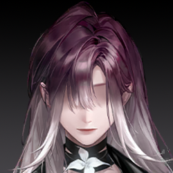
犯人が臨時指揮部を襲撃し、輸送車で総司令を拉致して逃走した。車両番号DS-3864H。車は錆びた川を通過し、今、新都市方面に向かっている。
生命体徴監視によると、司令はまだ生きている。敵がこんな正確な情報を得られたのは、福音地がFAC内部にすでに浸透している証拠だ。
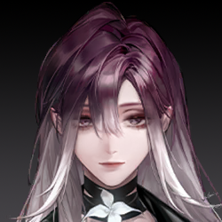
今回の救援任務は上庭HUSH部隊が引き受ける。作戦時間、2時間13分。予定の会議開始時間より前に司令官を奪還し、パニックになるのを避ける。
FAC本隊は動かず、一切の情報を漏らすな。司令が予定通り到着すると伝えろ。この間、異常行動、恐怖を煽る行為、司令の行方を追う者はすべて福音地のスパイの可能性がある。第九機関が厳密に追跡する。

福音地が前哨戦の招待状を送ってきた。これは我々のチャンスでもある。西区作戦は必ず許可される。大戦が来る前に内通者とスパイを排除したまえ。
探偵が目を覚ますと、辺りは真っ暗だった。空間が揺れ、まるで車の中にいるようだ。探偵は手探りで周囲を確認すると、驚くことに、そばには多くの人が積み重なっていた。
携帯は奪われ、外部と連絡が取れない。探偵は小さな懐中電灯を取り出し、照らした。
周囲には衛兵、文官、そして名前もわからない高級幹部たちがいたが、皆、完全に意識を失い、体には小さな「花」が咲いていた。
彼女は急いで見える全員を調べた。幸い、開花の程度はどれも浅い。これは業師が人を操る手段にすぎないようだ。
だが、その中に少し異なる人物を見つけた。年老いても頑強で、白髪交じりの髪、傷だらけの体、体の多くの部分が機械に置き換えられ、通常よりも強い自由制限を受け、深い昏睡状態にあった。
探偵はすぐに自分の状況を理解した――歳暮至、茫茫覆枯井、且独行。これが四句目の詩に対応する本当の第四の現場。そして、彼女自身も昨夜の襲撃で「被害者」の一人としてここに連れてこられたのだ。
探偵まで被害者の位置に置かれたということは、犯人はもう彼女を必要としていないということだ。
まだ間に合う！あんたの思い通りにはさせない！この車がどこに行くかわからないけど、早く――
彼女は意識のない司令を懸命に動かそうとしたが、すぐに男の体にぞっとする装置を見つけた。

こんにちは、刑事ちゃん。
N.F.113年8月17日11:32
FAC黒環封鎖行動合同指揮部

ほら、ドアを叩くのやめなよ。これはFACの超装甲車だよ、いつもぶっ壊してる金庫じゃないんだから。
まあ、ムキにならないでよ。君たちだって汚い手で私の人を縛ったじゃない？
今回の西区作戦はめっちゃ大事だよ。BR-002を封鎖できれば、西区は救われる。たくさんの無垢な人が城邦に見捨てられずに済む！今はあんたが気まぐれ起こす時じゃない！
ふん、知ってるよ。私がそんなの気にしないってこと、君もわかってるでしょ。
はいはい、私にとってそんなことはどうでもいいわ。あなたもそれを知っているでしょ。
連絡先を教えてよ。君の大好きな執行人お姉さんに電話かけたいな。
聞き慣れた着信音がトランシーバーの向こうから響いた。
おっと、必要なくなった。彼女から君にかけてきたよ。
しっ、大人が話してるんだから、子供は口出ししない。君、ミュートにしたよ。
業師は探偵の怒鳴り声を無視し、携帯の着信を直接つなぎ、スピーカーをオンにした。
運転席の向こうでは、小娘が明らかにキレていて、必死にドアを叩き、電話の相手の注意を引こうとしていた。業師はのんびり携帯をトランシーバーと自分の間に提げた。車は猛スピードで走り、騒音が少しうるさい。
こんにちは、業師。
どうも、執行人さん。君の大事な子が私の手にいるけど、まるで驚いてないみたいね。
キミがあの子を初めて誘拐した時に、GPSを仕込んでおいたから、位置は特定できる。
クリスティナが錆の川の近くにいるのは知っている。きっとまたキミに拉致されたんだろつ。
ふーん、変ね。私が彼女を拉致してから何時間も経ってるのに、なんで今さら電話してきたの？
業師はドアを叩く音がピタリと止まったのに気づき、冷笑して電話に集中した。
自分の部下を利用して私の位置を特定するつもり? ひどいわね、彼女の心が傷つくじゃない。
総司令もそこにいるね。車の位置はすでに特定済み。今回は君を追うのは治安官でもFACでもなく、上庭専属のHUSH部隊だ。
今ならまだ交渉する余地があるよ、業師。
ふっ、君のHUSH部隊なら、6月から私の邪魔をしていたじゃない。そんなつれないことを言わないでよ。
君の指揮に従うために電話に出たわけじゃないわ。
聞きなさい、上庭の執行人。この車には君たちの総司令、交渉の重要人物十数人、そして君たちが大嫌いな福音地の狂厄爆弾がある。新都市に向かってる。
運転してるのは福音地の傀儡造物。狙撃しても無駄よ。この道中で何かあって車が減速したら、爆弾は即爆発する。その時、半径1キロのM値は2000超えるよ。
爆弾を解除する唯一の方法は、起動装置を直接外すこと。それは老いぼれの体についてる。老いぼれは君の小犬のそばにいるよ。
彼女にその能力があるかどうか……ふ、君も私もわかってるよね。
……
今は昼の11時32分。あと30分もしないうちに、この車は新都市の最初の人口密集地に着く。私は君と違って、条件は話さない。
これは君の自業自得よ。
わかった。これは確かに君らしい選択だ。
西区作戦は必要だし、総司令も必要だ。上庭の要求は明確で、私は最小の代償で脅威を解除する。
車が何度か衝撃を受け、屋根に何かがしがみついた。数が多い。HUSHの戦闘エリートだ。
……ふん、君たちごときで。
業師は電話を切り、ついでにトランシーバーのミュートを解除したが、向こうは静まり返っていた。
ほら、小娘、しょげないで。見ず知らずの人間に眼中に入れられてないだけだろ。君のセリンお姉さんがHUSH部隊をよこしたけど、君を助けに来たんじゃないよ。当然、彼らじゃ私を止められない。
遊び方は教えてやった。君の探偵ゲーム、まだ終わってないよ。続ける？
しばらくの沈黙の後、トランシーバーの向こうから低く、しかし確固とした声が響いた。
ハハハハハ！いいね、じゃあ君の正義をしっかり見せてよ。
福音地の狂厄傀儡機械が車を運転し、業師は手を伸ばしてその体内に突き刺し、漆黒の硬い花剣を引き抜き、窓を叩き割り、自身が車の上に飛び乗った。
疾走する烈風に逆らい、彼女は飛びかかってきた3人の白い仮面の男を刺し貫き、車外に投げ飛ばした。彼らはゴミのよう転がり、跳ね、追ってくる車を何台か破壊した。
その正義がどれだけ笑えるか、見せてよ。
それほど複雑な爆弾ではなかったが、探偵に考える時間はなかった。もっと急ぐべきことがあった。
運転席へのドアがガンッと開き、割れた窓から烈風が吹き込み、探偵のいる車内に流れ込んだ。彼女は急いで飛び出し、まず運転席の狂厄傀儡を掴み上げた。
そのまま傀儡を窓の外に投げ捨て、急いでハンドルを握った。ブレーキを探したが、すでに外されていた。
顔を上げると、業師がいつの間にか車のボンネットに座り、探偵に背を向け、髪が割れたフロントガラスを通って探偵の視界を乱した。
11時56分、もうすぐだよ。
お、ほんと？よくやったね。褒めてほしい？
ふざけないで！あんなの簡単な仕掛けだよ、私みたいな素人でも簡単に解けた。あんた、そもそもそれで殺す気なんてなかったでしょ！総司令を殺すのが目的じゃないなら、最後の標的は誰？なんでこんなことしてるの？
HUSHはもうこの車への強攻を諦めたよ。私には手も足も出ないみたいね。代わりに最後通告を残してきた。1分後、危険区域に入る前に、車ごと定点爆破するって。
この！携帯を返して！彼女たちに、爆弾はもう解除したって、問題ないって伝える！車を止めるだけでいい、最悪、燃料が尽きるまで走らせてやる！
言ったよ。
君が仕掛けを解く5分前に、君ならできるってわかってた。執行人にメッセージ送ったよ。
まだ返信がない。見なかったのかな？それとも信じなかった？
それとも……
道路の遠く前方に、ぼんやりした人影が現れた。セリンが道路の真ん中に立っていた。
ほら、あれ、君の正義の光じゃない？
探偵はもう業師の挑発を聞いていなかった。彼女は浮かび上がる、ゆっくりと開く黒い死神――「黒石英」と呼ばれる上庭の武器を見た。
彼女はこの力を見たことがある。かつては正義を守る、絶対に信頼できる強大な力だった。今、それが彼女を恐怖させた。
やったよ……私は彼女を止めた、信じて……お願い……
黒石英はゆっくりと展開し、エネルギーを溜めているようでも、現場を分析しているようでも、死を計算しているようでもあった。流れる光が波のように過ぎ、残酷なカウントダウンのようだった。
ついでに言うと、老いぼれはそう簡単には死なないよ。でなきゃ、福音地の連中が私にこんな仕事を頼むわけない。
でも、この車にいる他の人はそうじゃない。
君も含めてね。
業師は鼻で笑い、車の上に戻り、去る前に最後の言葉を残した。
じゃあね、正義の使者。
今、探偵の目にはセリンしか映らなかった。この距離、割れた窓越しで、互いをはっきり見分けられた。
セリンの表情はまるで固まった彫像のようだったが、ある瞬間、探偵は彼女の唇が動くのを見た。
黒石英の中心から青い光が垂直に空へ放たれた。車の前方の地面に即座にいくつかの光の円が投影され、制御不能な車がそこに突っ込む瞬間、何かが天から降ってきた。
白い光が探偵の視界を覆い、巨大な衝撃が彼女を吹き飛ばした。エアバッグが開いたが役に立たず、探偵の頭は地面に強く叩きつけられた。
N.F.113年8月17日午後2:23
FAC黒環封鎖行動合同指揮部-公路中段
火海と廃墟の間を、執行人がゆっくりと焦げた路面を歩き、老者を見つけた。
彼の制服は破れ、機械義肢が大きく露出していた。心臓部には微かな光が脈打ち、体の少なくとも半分は衝撃で破壊されていなかった。鉄のように不屈だった。
数人の医療スタッフが駆けつけ、強心剤や機械マッサージを施すと、老人は突然目を開け、深く息を吸った。
彼は息を切らし、言葉もろくに話せなかったが、セリンをじっと睨みつけた。
まだ生きてる……まさか、お前……私に…あれを…使ったんじゃ……
ご安心を。あの力をあなたに使うには上からの許可が必要ですが、絶対に認められません。
彼は首を傾け、輸送車の方向を見た。大型車はすでに横転していた。汚染浄化部隊が狂厄爆弾の残渣を調べ――もう処理の必要はなかった。
黒石英の攻撃がすべての汚染を直接浄化した。いや……それはもっと上位からの、致命的な一撃だった。
車内には大量の5級狂厄汚染物がありました。あなたは衝撃には耐えられても、汚染には絶対に耐えられません。上庭が直接浄化するのが最も確実な方法で、代償も最小です。
……代償が最小？ふん……3月の西区でのお前のやり方と同じか？BR-002、2回だ。お前が言う「代償が最小」ってやつか？
はい。福音地が動き出しています。時間は限られ、私の任務は明確です。どんな代償を払っても。
総司令は呟き、差し出された執行人の手を振り払い、苦労しながら立ち上がった。全身の金属器官がぎっしり音を立て、ようやく立った。
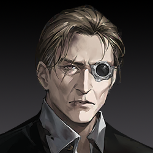
一人の老人を殺すのにこんな大袈裟なことは必要ない。これは煙幕だ。連中のこれまでの連続事件と同じで、注意を逸らし、次の行動を進めるためだ。
あの女、暗殺リストを握ってる。今回の作戦の要、FACの骨干だ。行方をすでに掴んでる者もいれば、まだの者もいる。私の口を割らせようとしたんだ。
あのゴミどもはよくわかってる。私一人殺しただけじゃ足りない。FACには勇士がいくらでもいる。作戦を止めるには全員殺す必要がある。
戻れ、私に時間を無駄にするな。内部に潜むスパイ、襲ってくる間諜をすべて一網打尽にしろ。
福音地がこんな行動に出たってことは、今回の作戦がすでに実質的な脅威になってる証拠だ。絶対に最後まで進める。
FACは狂厄の戦場で死ぬべきだ、こんな小人の手にかかるんじゃない。元の戦いを続けろ、連中に報いを！
もちろんです。第九機関とHUSHはすでに動いています。あなたを殺せなかった以上、敵の計画は完全に露呈します。
数人の戦士が駆けつけ、老人を支えて去った。車に乗る前、彼は最後にもう一度振り返った。
ある捜査員、能力者だ。爆発前に運転席をロックし、2割の火力を防いだ。彼女が無事であってほしい……
私の部下です。
FACの専用車が走り去った。セリンは運転席に向かった。医療スタッフが探偵に緊急処置を施していた。
探偵は天からの衝撃波で直接引き裂かれなかったが、溶けた金属が腰を貫いていた。
動けないまま、失血で意識が朦朧とする中、血の霧越しに、探偵は来る者を見定められなかったが、聞き慣れた足音を捉えた。
私がやる。
……私は仕掛けを解除した……やったよ、別にやらなくても……
誰もが君のようには純粋じゃない。あの女はもっと残酷な罠を仕掛けたことがある。このリスクは無視できない。
じゃあ……確認してくれる？私が……本当にやれたのか……知りたい……
その必要はない。
彼女の右目に淡い三角形が浮かび、同時に探偵は魂に何かが触れるのを感じた。
――白い光の触手、ぼやけた巨大な影。吐き気がする、侵入され圧迫される感覚。肉体の痛みは軽減したが、心の嫌悪感は消えず、彼女はもがき、叫び、答えを求めた。
司令がさっき言ってた、BR-002、3月の西区の暴動……あなた、関わったの？
2回って何？104年のBR-002は？これと関係あるの？調査中だって言ってなかった？
セリン姉貴……あなたは何をしたの？それって本当に……正義なの？
長い沈黙の後、嫌悪感が消えた。セリンは探偵の手を離し、きっぱりとした。
もういい。
セリンは立ち上がり、黒石英のそばに戻った。探偵は目を見開き、ようやく目の前の人を見定めた。彼女は高みから冷淡に、探偵を見下ろし、淡々と背を向けた。
探偵のすべての勇気と不満は、その突然の冷淡さに一瞬で打ち砕かれた。
普通の救急で十分だ。連れていけ。もう必要ない。
違うよ、ただ知りたかっただけ……ごめん、セリン姉貴、ただ……
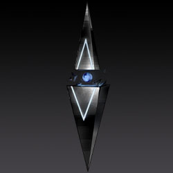
西区作戦計画、全票で可決。防御網構築が確定、資金、資源、人員は即座に準備完了。内部調査と戦術会議を直ちに開始。
福音地は黙って見過ごさない。準備しろ、X、今回のFAC作戦で、君にはもっと重要な本当の任務がある。
要求は受け取った。すべて実現する、いつものように。
遠く、軽やかに逃げ出した庭の業師は、錆びた川の対岸を愉快そうに見つめた。FACの臨時作戦指揮部は鋭い警報音を響かせていた。
あらら、依頼失敗しちゃって、しかもバレちゃった～次はどうしようかな～
面倒がやってくるよ。親愛なる依頼人さんたち、どうするつもり～？
N.F.113年8月17日14:23
「GARDEN」アジト
基地には陽光が差し込まず、レオポルドは門柱に寄りかかり、静かに目を伏せて何かを考えていた。しばらくして、彼女は目を開け、大げさに伸びをした。
うわーっ、この仕事、めっちゃ疲れた！寝すぎて腰も背中も痛いよ……
「カーネーション」～、お風呂入りたい！今回はバラで、紅茶もバラ、お菓子も――
まあいいや、堇でもいいよ。気分、ちょっとマシになった？よかったら、ついでにマッサージしてよ。
温かい温泉水が四角い浴槽に注がれ、鮮やかな赤いバラの花びらが浮かぶ。レオポルドは浸かり、堇のサービスに満足そうに身を委ねた。
まだ眠っていますが、体内に汚染はもう発生していません。あなたが能力で彼女の体からあの汚物を引き離してくれたおかげです。
新人たちが彼女の世話をしています。きっともうすぐ目覚めるでしょう。
「Garden」の手引きにまた一条追加だ。雇い主の変な力に頼ってバカみたいに動くんじゃなくて、自分を信じるか、さもなきゃ業師に頼りに戻ってこい。
私の禁令を何度も破って、勝手に動いて、あんなバレバレの罠にまで引っかかる。もし私が事前に備えてなかったら、今回の件で何でもかんでも喋られてたよ。
また長い沈黙が続き、結局、レオポルドが渋々口を開いた。
まあ……今、彼女は第九機関の心理専門家のところにいるよ。逆暗示のトラップを仕掛けておいたから、あいつら、まだ数日は右往左往するさ。
今、第九機関に閉じ込められてるぶん、外で暴れ回るよりは安全だ。あの銀蜘蛛の頭目、執行人のやり方をいつも見下してるから、彼女をHUSHには渡さないよ。
その後、たぶんお前の管理庁に送られるんじゃない？彼女にはちょうどいい。大仇は報いたんだし、自分が何をしたいか考えるまで、静かにしてればいい。
別にそんな嫌ってるわけじゃないよ。新人は無知でルールを破るけど、少なくとも一点、彼女は君たちよりマシだ。
何をしても自分のためだけ。他人のために犠牲になったり、他人のためにどうこうなんて考えない。絶対に損しないって点で、彼女は私に一番似てる。君たちよりよっぽど楽だよ。
業師、こんな派手に動いたこと、初めてです。注目を集めすぎて、大丈夫ですか？
レオポルドは笑った。こんな質問、堇にしかできない。普段は柔弱そうなのに、肝心な時はズバッと来る。彼女は顔を上げ、堇の顎を軽くつついた。
私に巻き込まれるのが怖いなら、隠れてなよ。どうせ君たちに出番なんかないんだから。
いいえ、「Garden」に入った日から、私は自分の運命を受け入れました。あなたは最強です。誰もあなたを倒せるとは思いません。
ただ、福音地と上庭の争い、いつも嫌悪してたじゃないですか。それなのに、こんな見つかりにくい場所を選んで、今回わざわざ参戦したのは、何か深い意図があるんですか？
深い意図なんてないよ。この前は春で、眠くて動きたくなかっただけ。夏が来たから、花を咲かせる時期になった。それで動いただけ。
HUSHの連中、ずっとウザくまとわりついてきて、私の庭をハエが這うなんて我慢できない。それだけ。
そう言いながら、彼女は堇の垂れた黒髪を巻きつけ、首の後ろを引っ張り、自分の目に近づけた。
で、なんでそんなこと聞くの？普段、こんなこと興味ないよね。ずっと「Garden」を抜けたがってたのに、初めて自分から戻ってきた。私のところに来る奴の目的は一つしかない――
お前の復讐、どうなった？あの優しくて自分を犠牲にした局長のためだろ？私が手伝ってやろうか？
私のところに戻ってきたのはそのためだろ？あいつに手を出した奴を許すわけない。西区で誰を殺した？錆火、執行委員会……他には？涅槃の幹部たち、チャンスはあった？
ありました。最近のあなたの活躍のおかげで、注目がそっちに集まって、私は近づく機会を得ました。あなたの行動を邪魔しないよう、慎重にやりました。「Garden」の仕業だとバレません。
へっ、よくやった。外に一切情報が出てない。さすが私の最高の弟子だ。
で、気が済んだ？スッキリした？あんなに仇を討って、そろそろ笑顔になってもいいんじゃない？笑ってみてよ。
君の笑顔、久しぶりに見てないからさ。渋い顔されると、私の気分も下がるんだよね。
……黒帮のゴロツキ、執行官、涅槃の偽善者を始末しました。仇をこの手で討ったのに、復讐の実感がまるでない。
……殺しきれない。私の仇、あの人の苦しみの責任を取るべきクズども、殺しても殺しきれない。奴ら、自分が何をしたかもわかってない！
あなたは快意恩仇こそが解放だと言いました。でも、この憎しみには終わりがない。私の恨みはぼやけ、疲れ果て、私は……解放されない。
あなたもずっと果てしない憎しみと戦ってきました。どうやって向き合ってるんですか？心が麻痺しないように、どうやって自分を守ってるんですか？
それとも、これが心を差し出す代償ですか？彼を失ったから、私はもう代わりを見つけられない。
だからあなたは、私たちに自分だけを愛しろと言うんですか？
私はどこへ進めばいいのか……あなたの導きが必要です。
……それ、復讐じゃない。ただ苦しみに押されてるだけだ。
仇が見つからないなら、ちょっと置いとけ。数日後、奴が首持って現れるかもしれないよ。
もしそのバカがまだ生きてるなら、見つけて、奪い返せ。好きになるのは悪くない。心を差し出したんじゃなくて、相手の心を騙して、しっかり縛りつければいいだろ？
機会があれば、そのバカが今どうしてるか、探してみたいね。まあ……
彼女は堇の髪をそっと撫で、珍しく柔らかな笑みを浮かべた。
君たちは私が選んだ花だ。私のいいところを少しくらい持ってるから、私の庭に入れた。
美しい花ほどハエを引き寄せる。それは君たちもわかってる。
花は確かに脆い。美しければ、軽く揉めば砕け、折れば曲がる。君たちもそう。
私に拾われた時、みんなくそくらえな状態だった。でも大丈夫、見た目が弱いだけで、君たちは思ってるよりずっと強い。
砕かれても、来年また咲く。焼かれても、新芽が出る。運命は君を折れるけど、決して壊せない――根を自分で握り続けてる限り。
流されるな、運命に押されるな、外のものに引っ張られるな。
譲歩しても理解は得られない。苦しみの元は「従わない」ことじゃなく、「独立していない」ことだ。
主権がなく、主権を守る力もない。それがハエに花を踏みつける隙を与えた。
君たちの人生は君たちのもの。私以外の誰の言葉も聞くな。
それが「Garden」が存在する理由、それが発展し続ける理由だ。
彼女は手を離し、立ち上がり、水がザバザバと鳴った。
わかりました。でも、業師、なんで「最後の」なんですか？
この2か月、あなたは一人で戦い続けて、みんな心配してます。
何か予定があるんですか？教えてください。あなたの身体――
うーん、ダメダメ、なんか体がキツい。みんなくそくらえ、全員呼んで、マッサージしてよ。ついでに祝おう、誕生日を前祝いだ！
今日も美しく、気分も最高、明日も私の思い通りになるように！
どうやったら業師を喜ばせられるか、考えて。今日の任務は、今日を私の最高の日にすること！
その夜、レオポルドは手書きの指令を一束残し、刺客たち全員に禁閉を命じ、「Garden」を去った。
N.F.113年8月19日午前2:23
錆びた川、内海放射区付近
錆びた川の境界、黒ずくめの女が素早く歩き、時折空間の一端で消え、次の瞬間、別の場所に現れた。
上庭のHUSH部隊……西区から新都市まで、ずっと邪魔してくる。まるで私たちを見透かしてるみたい……指揮してるのはあの能力者、セリン……
シーゲルは裂け目に静かに寄りかかり、ひどい傷を負っていた。もう逃げる力は残っていなかった。
誰も助けに来ない。それが彼らの構造だ。地上で動く幹部は互いに独立し、生死は自己責任。
私たちが外から少しずつ力を掘り起こしてる間に、上庭はすでに狂厄の深部に入る方法を見つけてる……集団観測、最低でも第8層……
いや……そんな深い力を使えるはずがない。さもないと、すべて終わってた。私たちが勝てるわけない……
今は観測と連絡だけ……狂厄の世界で集団意志の変動を観測したから、3月にあんな正確な誘導ができた……10年前の内海横断行動も、上庭の直接指揮があった……
でも、観測だって長くは続けられない……どんな方法でも、観測者は必ず侵蝕される。つまり……上庭には予備の観測者がいる……彼らの技術、こんなレベルまで来てるの？
もしすべてがあの執行人の観測後の計算なら、もし彼女が本当に何らかの方法で狂厄の深層領域に潜入してるなら……彼女が見るもの、彼女がすることは、福音地には想像もつかない。
上庭はどんな技術でこんな怪物を手なずけてる？その技術は□□□に効くのか？
そう考えると、シーゲルはゾッとした。恐怖と憎悪が同時に溢れた。
どんなことがあっても……阻止しないと、抹殺しないと……執行人……さもないと、BR-002が……
彼女が苦しみながら考えていると、暗闇から聞き慣れた声が響いた。
おや、シーゲルじゃない？数日ぶりなのに、なんでこんなボロボロなの。死なないでよ、私の「Garden」、お前の小細工で隠れてるんだから。
へっ……それは私の力じゃない。地下の力だよ。もうお前に専属だ。私、報酬を前払いしたのに、見たところ……お前、依頼を果たしてないね。
レオポルドは近づき、シーゲルの傷口に手を突っ込んだ。
セヴェロを騙したのはお前だろ……彼女に死にに行く情報と、あの気色悪いルーンを渡した。
自分の福音地の仲間より私に助けを求めに来るなんて、捨てられたんだね。最後のご利用、ありがと……
これから、私の「Garden」は福音地と一切関係ないよ。
咳……へっ、へへ……ふふふ……お前の実力なら、福音地に従わなくても、どうにもできないさ……
お前がなぜこうしてるか、わかってるよ……この力と何を交換したか、裏切った理由、全部知ってる……
言葉を終える前に、レオポルドが手を振ると、シーゲルの体内から巨大な漆黒の、まるで生きているように蠢く異形の花が引き抜かれた。シーゲルが完全に人形を失い、黒衣の上にその花が咲くだけになった。
レオポルドはシーゲルの溶けゆく姿を見、彼女が咲かせた悍ましい異形のものを見つめた。もっと早くこうすべきだった。
彼女は女が懐に隠していた情報を見た。そしてもう一方……もっと厄介な相手がいる。